Kaiser v1.23 – Handbuch (aus KAISER.HLP)
Kaiser- das Spiel um Korn
Stichworte: Musketiere, Nordmänner, Paladine, Paladine, Palast, Palast, Pietät, Pietät, Plündern, Prokurist, Rang, Rekrutieren, Revolution, Revolution, Revolution, Ritter, Ritter, Rückzug, Ruhm, Ruhm, Ruhm, Ruhm, Ruhm, Ruhm, Sabotage
Kaiser - das Spiel um Korn V 1.23
Kaiser ist ein Strategiespiel für bis zu 10 menschliche oder elektronische (nachfolgend CPs genannte) Spieler, die um den Titel des Kaisers wetteifern. Das Spiel ist eine Hommage an den gleichnamigen C64-Kultschocker und hat dem Vorbild eines voraus: es stürzt bei einer Schlacht nicht ganz so häufig ab.
Über die folgenden Dinge solltet Ihr Euch als jung-dynamischer Nachwuchsmonarch im Klaren sein:
Spieleinstellungen für Fortgeschrittene
Ablauf und Ziel des Spiels
Stichworte: Ablauf des Spiels
Ablauf und Ziel des Spiels
Wir schreiben das 15. Jahrhundert. Während die Abenddämmerung allmählich über das Mittelalter hereinbricht, ist Mitteleuropa noch immer in winzige Territorien aufgeteilt, deren Fürsten ständig in gegenseitiger Fehde liegen. Wer wird das Reich einen, wer wird Kaiser werden?
Kaiser ist ein rundenbasiertes Spiel. In jeder Runde trefft Ihr Entscheidungen, die sich auf die nächste Runde auswirken. Dabei habt Ihr die Möglichkeit, mit Euren Kontrahenten in Interaktion zu treten. Eine Runde entspricht einem Jahr im Spiel.
Ablauf
Zu Beginn des Jahres erhaltet Ihr eine Übersicht über die Entwicklung Eures Reiches seit dem letzten Jahr.
Danach bekommt Ihr die Gelegenheit, Korn an die Bevölkerung zu verteilen, mit Land und allerlei Waren zu handeln, Gebäude bauen zu lassen, Kriege zu führen usw. Ihr mögt auch Botschaften an Eure menschlichen Gegner verschicken, um diese beispielsweise zu erpressen oder deren Land mit Saboteuren zu infiltrieren.
Die Runde ist beendet, sobald Ihr den Menüpunkt RUNDE|BEENDEN oder das Symbol in der Buttonleiste anklickt. Der liebe Gott prüft dann, ob eine Beförderung ins Haus steht oder gar eine Revolution.
Ziel des Spiels
Man mag es kaum glauben, aber wer zuerst den Titel des Kaisers erworben hat, ist der Sieger und das Spiel ist beendet.
Buttonleiste:
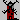 | Kornverteilung |
| Land kaufen/verkaufen | |
| Gebäude bauen | |
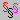 | Steuern festsetzen |
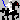 | Truppen aufstellen |
| Manöver abhalten | |
| Krieg führen |
| Demographische Daten | |
| Finanzhaushalt | |
| Karriereberatung | |
| Geheimdienst |
| Wirtschaftsstatistik | |
| Militärstatistik | |
| Internationaler Vergleich |
| Runde beenden |
Diplomatie
Diplomatie
Die etwas zivilisiertere Variante der Kommunikation mit Euren Kontrahenten im Vergleich zum blutigen Kriegshandwerk. Folgende Optionen bieten sich Euch im Menü AKTIONEN|DIPLOMATIE:
Entwicklungshilfe
Ihr habt die Möglichkeit, einem anderen Herrscher mit einer Spende unter die Arme zu greifen, um ihn für eine Allianz gegen einen noch schlimmeren Feind zu gewinnen oder einfach bei Laune zu halten. Spenden könnt Ihr Taler, Land (falls die Heimat des Empfängers an Eure angrenzt) und militärische Einheiten.
Abkommen
Zur Zeit gibt es bei Kaiser zwei verschiedene Arten von freundschaftlichen Abkommen:
Handelsabkommen:
Erreicht Ihr ein Handelsabkommen mit einer anderen Nation, so profitieren beide Parteien von höheren Staatseinnahmen, insbesondere aber die wirtschaftlich schwächere von beiden. Ihr könnt jedem Mitstreiter ein solches Abkommen vorschlagen, der dieses Angebot dann annehmen oder ablehnen kann. Ein bestehendes Handelsabkommen kann ferner jederzeit von einer Seite wieder gekündigt werden. Sollte es zu einem Krieg zwischen zwei Ländern kommen, werden alle Verträge zwischen beiden automatisch annulliert. Der Ambassador profitiert besonders durch Handelsabkommen, da sich bei ihm die Einnahmen verdoppeln.
Friedensvertrag:
Ein zeitlich befristeter Nichtangriffspakt, der es beiden Parteien erschwert, die andere Seite militärisch zu attackieren. Einmal vorgeschlagen und angenommen, kann er nicht wieder gekündigt werden (nur ablaufen). Ein Friedenvertrag kann sinnvoll sein, um Misstrauen abzubauen oder den Spielverlauf zu beschleunigen, nur sollte die Vertragsdauer sorgfältig (i.A. nicht zu lange) gewählt werden.
Der Bruch eines Friedensvertrages kostet den Initiator viel Ruhm.
Tribut fordern
Dient der Erpressung eines schwächeren Mitspielers, der sich damit vielleicht den Frieden erkaufen kann. Ein Kurier lässt Euch in der nächsten Runde wissen, ob das Opfer auf den Handel eingegangen ist. Fordern könnt Ihr Taler, Land und Sklaven. Ihr könnt auch versuchen, ein Handelsabkommen oder einen Friedensvertrag herauszupressen.
Sabotage
oder die fünfte Kolonne. Saboteure bringen (gegen viel Geld) das Leben Eurer Konkurrenten in arge Unordnung, indem sie in deren Landen allerlei Randale und Schabernack betreiben, bis sie irgendwann erwischt werden. Je höher der Titel Eures Opfers, desto teurer kommt Euch dieser Heidenspaß. Als Ambassador bekommt Ihr einen satten Preisnachlass.
Mit wem Ihr nun Handelsverträge abgeschlossen habt und wo Eure Saboteure tätig sind, könnt Ihr unter INFORMATIONEN|GEHEIMDIENST einsehen. Dort erfahrt Ihr auch allerlei Wissenswertes über Kontostände und Armeestärken Eurer Konkurrenten. Außer für den Ambassador sind jedoch nicht immer alle Daten verfügbar.
Einwohnerpolitik
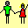
EinwohnerEine gute Einwohnerpolitik ist der wichtigste Faktor auf dem Weg an die Spitze. Gegen den Willen der Bevölkerung könnt Ihr niemals Kaiser werden. Die Untertanen wollen natürlich gut gefüttert und nicht ausgebeutet werden. Über die aktuelle Lage solltet Ihr Euch regelmäßig im Menü INFORMATIONEN|DEMOGRAPHISCHE DATEN informieren. Hier werden die einzelnen Schicksale auf nüchterne Zahlen reduziert.
Zufriedenheit
Zufriedene Bürger arbeiten besser und starten keine Revolution. Hohe Steuern und eine gierige Justiz machen die Bevölkerung ebenso unglücklich wie Hunger und Elend. Je höher Euer Adelstitel, desto zufriedener Eure Untertanen. Ebenso erhöht jede reguläre Armee und ein scharfes Einwanderungsrecht die Zufriedenheit. Zudem halten einige Flüche wie Engelszungen oder Terror eine a priori Verschiebung der Zufriedenheit in die eine oder andere Richtung bereit.
Um einen neuen Titel verliehen zu bekommen, müsst Ihr Eure Untergebenen zumindest vorübergehend auf ein gewisses Zufriedenheitsniveau bringen.
Geburten- und Sterberate
Beide werden insbesondere bestimmt durch die Menge an Korn, die an die Bevölkerung verteilt wird. Eine Möglichkeit, die Sterberate darüber hinaus herabzusetzen, besteht in der Wahl des Zaubers Heilende Hände. Seltene Ereignisse wie Epidemien oder Katastrophen beeinflussen ebenfalls die Wachstumsrate der Bevölkerung, hier hilft Euch nur ein gutes Karma.
Rein- und Rausrate
Immigranten kommen um so zahlreicher in ein Land, je mehr Wohlstand sie dort zu finden glauben. Ein unbarmherziges Einwanderungsrecht bremst den Strom von Einwanderern, das macht die Einheimischen zwar zufriedener (insbesondere in Deutschland), dadurch entgehen Eurem Staat jedoch zusätzliche Steuereinnahmen.
Emigranten sind die Opfer Eurer ungerechten Steuerpolitik oder schieren Hungers.
Buttonleiste:
| Demographische Daten |
Gebäude
Gebäude
Zum Bau von Gebäuden braucht Ihr Land, pro 1000 Hufe kann nur ein Marktplatz, eine Kornmühle usw. gebaut werden. Folgende Gebäude gibt es:
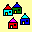
Marktplätzebringen Euch staatliche Einnahmen und sind schwer zu zerstören. Die Höhe der Einnahmen sind von der Zufriedenheit Eurer Einwohner abhängig.
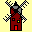
Kornmühlenbringen höhere Einnahmen als Marktplätze, sind dafür teurer und gehen schneller mal in Flammen auf.
Die Höhe der Einnahmen sind von der Zufriedenheit Eurer Einwohner abhängig.
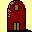
Kornspeicherbenötigt Ihr zur Lagerung Eurer Kornreserven. Jeder Kornspeicher bietet Platz für 10000 Last Korn (zum Vergleich: eine Kornmühle kann nur 500 Last aufnehmen).
Lagerhalle
dient zur Aufnahme von Handelsgütern (Salz, Bier, Wein und Waffen). Jede Lagerhalle bietet Platz für 1000 Last Waren. Nicht ausgenutzte Lagerkapazitäten werden automatisch vermietet und bringen zusätzliche Einnahmen.
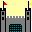
Palastermöglicht dem Kurfürsten, wenn komplett, die Beförderung zum König.
Benötigt insgesamt 12 Teile, in jeder Runde kann höchstens ein Teil fertiggestellt werden!
Kathedrale
kann nur von König errichtet werden, nötig um zum Kaiser gekrönt zu werden.
Benötigt insgesamt 12 Teile, in jeder Runde kann höchstens ein Teil fertiggestellt werden!
Sämtliche Gebäudetypen können während einer Schlacht oder durch eine Katastrophe zerstört werden.
Achtung: solltet Ihr einen Teil Eures bebauten Landes verlieren (durch Verkauf, Verschenken etc.), so gehen damit automatisch auch die darauf befindlichen Gebäude verloren!
Buttonleiste:
| Gebäude bauen | |
| Land kaufen/verkaufen |
Güter
Güter
Der Verkauf von Handelsgütern, die Euer Volk produziert hat oder die Ihr einer Handelskarawane abgekauft habt, bringt Euch zusätzliche Einnahmen.
Um mit Gütern Handel betreiben zu können, benötigt Ihr wenigstens eine Lagerhalle. Die Verkaufspreise schwanken von Jahr zu Jahr, deshalb kann es sich lohnen, gleich mehrere Lagerhallen zu bauen und große Mengen zu hamstern, bis die Preise hoch genug sind für ein rentables Geschäft.
Salz
Die unedelste Handelsware bei Kaiser. Salz wird in den Stöcken der nördlichen Länder von Euren Untertanen abgebaut. Die Menge hängt von der Zahl der Einwohner und deren Zufriedenheit ab
Bier
Wird aus überschüssigem Korn produziert, sofern Ihr im Kornverteilungsdialog die Option BIER BRAUEN aktiviert habt. Der Ertrag ist abhängig von der Kornmenge, der Zahl der Einwohner und deren Zufriedenheit.
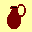
WeinEdles Handelsgut, das in den klimatisch begünstigten südlichen Ländern hergestellt wird. Der Ertrag ist abhängig von der allgemeinen Erntesituation, der Zahl der Einwohner und deren Zufriedenheit
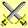
WaffenDas wertvollste Handelsgut. Es kann in Schmieden produziert, von Waffenhändlern erworben oder im Krieg erbeutet werden. Ohne Waffen ist es nicht möglich, reguläre Truppen zu rekrutieren. Seid also vorsichtig mit dem Verkauf - die nächste militärische Bedrohung von außen kommt bestimmt!
Wenn Ihr Euch nicht selbst um die Geschäfte kümmern wollt, beauftragt Euren Prokuristen mit dieser Aufgabe. Er beobachtet den Markt für Euch und verkauft Eure Waren automatisch, wenn die Preise die von Euch vorgegebenen Mindestpreise übersteigen.
Buttonleiste:
| Güterhandel | |
| Kornverteilung |
Korn
Korn
Der Ackerbau stellt immer noch wichtigste Einnahme- und Nahrungsquelle dar. Korn wird von Euren Untertanen geerntet und in den Kornspeicher gebracht. Es obliegt Euch als Herrscher, das Korn gerecht unter der hungrigen Bevölkerung zu verteilen. Fällt die Ernte ins Wasser oder steht nicht genügend Land für den Ackerbau zur Verfügung, muss Korn hinzu gekauft werden. Für die Kornverteilung gibt es drei wichtige Größen:
Minimum
Ihr stellt nur Korn für eine gewisse Elite der Bevölkerung zur Verfügung, der überwiegende Teil muss unweigerlich verhungern. Massensterben und Unruhen sind die möglichen Folgen.
Benötigtes
Es wird etwa so viel Korn verteilt, wie zur Aufrechterhaltung des Status Quo nötig ist. Geburtenrate und Sterberate halten sich die Waage, die Bevölkerungsentwicklung stagniert.
Maximum
Garantiert für alle einen reich gedeckten Tisch und viele kleine Nachwuchs-Kornfresser. Einem gesunden Wachstum der Bevölkerung steht nichts im Wege.
Solltet Ihr Euch vor andauernden Missernten fürchten, dann ist der Zauber Gaias Segen der richtige.
Um das Korn nach der Ernte für den langen Winter lagern zu können, benötigt Ihr zusätzliche Kornspeicher, da die Speicherkapazität der Kornmühlen stark begrenzt ist.
Ihr habt die Möglichkeit, überschüssiges Korn durch Eure Untertanen in Bier verwandeln zu lassen. Dieses verrottet im Gegensatz zum Korn nicht und Ihr könnt es in Euren Lagerhäusern bis zum Verkauf aufbewahren (bis Euch der Marktpreis für den Gerstensaft attraktiv erscheint).
Buttonleiste:
| Kornverteilung | |
| Gebäude bauen |
Land
Stichworte: Ackerbau
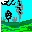
LandLand braucht Ihr für den Ackerbau und als Bauplatz für Gebäude. Insbesondere zu Beginn des Spiels eignet sich Land auch zum Spekulieren.
In dem Maße wie die Bevölkerung und die Wirtschaft Eurer Nation wächst, steigt auch der Bedarf an Land. 1000 Hufe Land können bis zu sechs verschiedene Gebäude beherbergen und bei einer durchschnittlichen Ernte etwa 100 Menschen ernähren.
Land könnt Ihr kaufen oder erben, aber auch durch eine siegreiche Schlacht einem benachbarten Fürsten abjagen.
Die gesamte verfügbare Landmenge im Spiel ist begrenzt, so dass Ihr irgendwann Kriege führen müsst, um der wachsenden Bevölkerung Platz und Nahrung zu bieten. Das ist nun einmal der Preis für ständiges Wachstum!
Buttonleiste:
| Land kaufen/verkaufen |
Magie
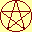
MagieZu Spielbeginn werdet Ihr von einer Hexe heimgesucht. Sie bietet eine Art Zauber an, der es Euch ermöglicht, Eure Kontrahenten auf einem gewissen Gebiet zu übertrumpfen. Leider bietet die Schlampe einen solchen Dienst auch Euren Konkurrenten, cest la vie!
Folgende Zauber sind wählbar:
Ambassador
Dieser Zauber macht Euch zum perfekten Diplomaten und Außenpolitiker. Ihr habt jederzeit den vollen Überblick über Eure Konkurrenten, zahlt weniger für Saboteure und könnt von Euren Mitspielern ohne Ruhmverlust Tribute erpressen.
Bienenfleiß
Eure Einwohner arbeiten fleißiger als üblich, damit steigen die Erträge der Marktplätze und Kornmühlen.
Chevalerie
Das Rittertum, ein aussterbendes Paradigma, hat es Euch angetan. Eure Ritter danken es Euch, indem sie weniger Lehen von ihrem Feudalherrn verlangen und Knappen kommen von weit her, um in Eurem Land Unterweisung zu suchen.
Engelszungen
Ihr erhaltet eine charismatische Aura. Die Einwohner sind zufriedener, die Produktivität steigt und Revolutionen werden seltener.
Ferengicharme
Ihr entwickelt ein außerordentliches Verhandlungsgeschick und bekommt u.a. Gebäude und neue Truppen billiger.
Gaias Segen
Das Land wird fruchtbarer, Ihr werdet eins mit der Natur. Missernten werden niemals zum Problem.
Heilende Hände
Dieser Spruch hat zwei Effekte: in Friedenszeiten vermindert sich die Sterberate der Bevölkerung, in der Schlacht erholen sich Eure eigenen Truppen teilweise von ihren Verwundungen.
Heldentum
Ihr bekommt einen besseren Draht zu Euren Soldaten und einen Ruhmbonus zu Beginn. Alle neuen Truppen starten bereits mit dem Rang Offizier und können bis zur Elite aufsteigen, ein Rang, der anderen verwehrt bleibt.
Karma
Ein Spruch, der aus Euch postnatal ein Sonntagskind macht. Gute Ereignisse werden angezogen, Katastrophen treten seltener ein.
Pietät
Verwandelt Euch in eine Art Heiligen. Das beeindruckt nicht nur das Volk, sondern auch die Kirche dermaßen, dass sie keine Talerforderungen stellt. Außerdem könnt Ihr als Scheinheiliger die Einheit Paladine einsetzen.
Terror
Unterstützt Euch bei der Errichtung einer Schreckensherrschaft. Als Tyrann schürt Ihr Angst sowohl bei Euren Feinden als auch bei Euren Untertanen, die weit weniger zufrieden sind als unter einem netten Monarchen. Dafür vermögt Ihr Vampire im Kampf einzusetzen, die sich wie Unkraut wuchernd vermehren und feindliche Truppen vor Furcht erzittern lassen!
Feldmarschall
Dieser Zauber verwandelt Euch in einen begnadeten Militärstrategen, der sein Heer schneller und zielsicherer durch fremde Lande führen kann und der deshalb in jeder Runde einen zusätzlichen Initiativpunkt erhält.
Militär
Ob nun aus Not, Missgunst oder purer Willkür werdet Ihr Euch irgendwann entscheiden, einem Mitstreiter den Krieg zu erklären. Wenn nicht, werdet Ihr Euch eines Tages selbst einer feindlichen Invasionsmacht gegenüber stehen sehen.
Folgende Themen befassen sich mit dem Militär:
Buttonleiste:
| Truppen aufstellen | |
| Manöver abhalten | |
| Krieg führen | |
| Militärstatistik |
Lehnswesen
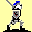
LehnswesenDie Installation eines Lehnswesens kann für einen Fürsten eine lohnenswerte Sache sein, wenn es darum geht, seinen Geldbeutel zu schonen und sich gleichzeitig der Loyalität seiner Ritter zu versichern.
Gegen eine dauerhafte Zuteilung von Grundbesitz verzichtet eine Rittereinheit künftig auf Soldzahlungen und steigt augenblicklich in den Rang Elite auf. Um eine Einheit zu beleihen, markiert ihr Icon im Truppendialogfenster und klickt anschließend auf den Button Spezial.
Die Fläche des Grundbesitzes richtet sich nach dem Sold der Einheit. Mit dem Zauber Chevalier kommt ein Herrscher weitaus günstiger davon.
Folgende Typen von Einheiten könnt Ihr beleihen: Landesritter, Kreuzritter, Templer und Schwarze Ritter. Zwar besitzen auch Helden und Paladine den Status von Rittern, doch da sie keinen Unterhalt kosten, taugen sie auch nicht als Lehnsnehmer.
Einen gravierenden Haken hat die ganze Sache: zwar gehört das übereignete Land de facto immer noch Euch, doch obliegt die wirtschaftliche Nutzung dieses Landes ab sofort und bis in alle Ewigkeit den Rittern und deren Erben. Das bedeutet für Euch, dass
- Ihr es nicht verkaufen könnt
- Ihr keine Gebäude darauf bauen lassen könnt
- dass das Land keine Ernte einbringt
In einer Zeit knapper Landressourcen solltet Ihr Euch einen solchen Schritt deshalb reiflich überlegen!
Siehe auch:
Ruhm
Ruhm
Der Versuch einer Bewertung all Eurer Handlungen im ethischen Sinne. Ruhm müsst Ihr Euch über viele Jahre hinweg verdienen. Ein ruinierter Ruf ist nicht so leicht zu löten wie eine temporäre Unzufriedenheit des Volkes. Obschon der Ruhm kein Beförderungskriterium darstellt, bringt es Euch einige Vorteile, wenn Ihr Euch entscheidet, nach Glanz und Gloria zu streben:
- Der ruhmreiche Herrscher bekommt Standardtruppen deutlich billiger
- Fremde Söldner kommen häufiger ins Land
- Manöver werden billiger
- Je höher Euer Ruhm, desto weniger Sold verlangen Eure neuen Truppen und desto engagierter kämpfen sie für Euch
- Ihr erhaltet mehr Initiativpunkte je Runde
- Ihr geratet nicht so bald in Vergessenheit
Die Möglichkeiten der Vermehrung oder Verminderung des eigenen Ruhmes sind nicht auf kriegerische Taten beschränkt.
Folgende Handlungen oder Ereignisse beeinflussen Euren Ruhm positiv:
- Jegliche Beförderung
- Fertigstellung von Palast und Kathedrale
- Eure Initiative für ein abgeschlossenes Handelsabkommen
- Das Zustandekommen eines Friedensvertrages mit einem anderen Landesfürsten
- Siege über marodierende Schurken
- Siege über Kontrahenten, insbesondere einen überlegenen Feind
- Mutige Taten, wie einen Angreifer nicht vor der Stadt, sondern auf dem Schlachtfeld zu erwarten
Ist der Ruf erst ruiniert, lebt es sich ganz ungeniert. Folgendes leistet dazu einen Beitrag:
- Schulden am Jahresende (nicht tragisch)
- Enteignungen seitens der Banken
- Schlechte Landpolitik
- Zerstörung des Palastes oder der Kathedrale
- Erpressung eines Mitstreiters
- Niederlagen gegen marodierende Banden
- Aufstände des Volkes (übel)
- Jedes Jahr, in dem weniger als die Hälfte Eurer Untertanen mit Euch zufrieden ist
- Kriegserklärungen an Kontrahenten mit niederem Rang oder schwächerer Streitmacht
- Überfall auf einen Gegner, der keine regulären Truppen besitzt (schäbig)
- militärische Niederlagen, insbesondere gegen schwächere Titelaspiranten
- Die Verfolgung und Versklavung der Zivilbevölkerung eines besiegten Landes (sehr übel)
- Bruch eines Friedensvertrages (sehr übel)
Steuern und Gesetze
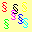
Steuern und GesetzeSteuern waren schon immer ein probates Mittel, um dem Volk die Taler aus der Tasche zu ziehen. Als Gegenleistung bietet der Landesherr seinen Bauern und Bürgern Land und Sicherheit.
Die Höhe der Steuern wirkt sich auf die staatlichen Einnahmen und die Zufriedenheit Eurer Einwohner in komplexer Weise aus und kann im Menü AKTIONEN|STEUERN FESTSETZEN beeinflusst werden. Zu den Auswirkungen sehet bitte unter Einwohner.
Im gleichen Dialogfenster könnt Ihr auch einstellen, wie hart Eure Justiz gegen Verbrecher vorgehen soll. Eine zu lasche Justiz verschlingt nur Taler und öffnet feindlichen Spionen Tür und Tor. Zu hart und gierig, verschreckt sie Euch allerdings die Bevölkerung, wenn auch die innere Sicherheit weitgehend gewährleistet wird.
Buttonleiste:
| Steuern festsetzen | |
| Demographische Daten |
Taler
Taler
Der Taler ist des Kaisers universelle Währung. Mit ihm vermögt ihr beinahe alles zu kaufen, vom Körnchen bis zur Heldentruppe. Für schwarze Zahlen in der Schatzkammer gibt es am Jahresende sogar Zinsen.
Auch Schulden dürft Ihr machen, die Höhe ist abhängig von Eurem Titel. Der Zinssatz ist jedoch happig und die Banken sind weder geduldig noch zimperlich!
Eure Haupteinnahmequellen werden staatliche Marktplätze und Kornmühlen sowie Eure Untertanen selbst sein. Der Zauber Bienenfleiß steigert die Erträge aus den Mühlen und Märkten ebenso wie eine glückliche Arbeiterschaft. Überhöhte Steuern bringen nicht unbedingt Mehreinnahmen, sondern bremsen viel mehr die wirtschaftliche Produktivität.
Unter dem Menüpunkt INFORMATIONEN|FINANZHAUSHALT könnt Ihr ersehen, welche Einnahmen und Ausgaben im nächsten Jahr auf Euch zu kommen dürften. Klicket auf INFORMATIONEN|STATISTIKEN|WIRTSCHAFT, und Ihr werdet Euch wundern, wie viel Ihr über die Jahre verdient und wieder verprasst habt!
Buttonleiste:
| Finanzhaushalt | |
| Wirtschaftsstatistik |
Titel
Titel
Ein höherer Titel bringt Euch viele Vorteile. Euer Ansehen bei der Bevölkerung steigt automatisch ein wenig, Ihr dürft höhere Schulden machen, bessere Einheiten rekrutieren uvm, außerdem möchtet Ihr dereinst gewiss einmal Kaiser werden. Um in der Hierarchie aufsteigen zu können, müssen bestimmte Bedingungen erfüllt sein. Jeder Titel erfordert bestimmte Mindestwerte in einigen der folgenden Kategorien:
Natürlich braucht ein König mehr Jubelbräute als ein Freiherr und Kaiser werdet Ihr nicht in einem Land von der Größe eines Bolzplatzes. Allgemein gilt: mit roten Zahlen im Staatssäckel werdet Ihr vergeblich auf eine Beförderung warten.
Als Beispiel seien hier die Mindestvoraussetzungen für Eure Beförderung zum Kaiser angegeben:
| Zufriedenheit | 95% |
| Einwohnerzahl | 10,000 |
| Ländereien | 100,000 Hufe |
| Armeestärke | Stärke von 8 erfahrenen Einheiten Kreuzrittern |
| Gebäude | Palast und Kathedrale |
| Schatzkammer | 1,000,000 Talerchen |
Ob Ihr alle Voraussetzungen für eine Beförderung erfüllt oder nicht, könnt Ihr jederzeit unter INFORMATIONEN|KARRIEREBERATUNG ersehen.
Buttonleiste:
| Karriereberatung |
Einheiten
Einheiten
Militärische Einheiten schlagen sich für Eure Sache auf dem Schlachtfeld die Köpfe ein. Dafür kosten sie Geld, sowohl in der Anschaffung als auch in der Unterhaltung. Ihr dürft immer nur maximal 16 Einheiten zur gleichen Zeit besitzen, die auf zwei Armeen zu je 8 Einheiten aufgeteilt werden können.
Ihr mögt Einheiten rekrutieren, manche werden sich freiwillig melden. Sie dürfen auch jederzeit wieder entlassen werden, um Platz für bessere zu machen oder Sold zu einzusparen.
Buttonleiste:
| Truppen aufstellen | |
| Manöver abhalten |
Einheiten- Attribute
Die Attribute der Einheiten
Einen Überblick über Eure Truppen erhaltet Ihr im Menü unter AKTIONEN|MILITÄR|TRUPPEN AUFSTELLEN, durch einen Klick auf das Symbol der Buttonleiste oder durch Doppelklick auf die Truppenicons auf der Landkarte:
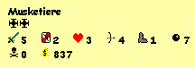
Jede Einheit verfügt über folgende Attribute, die auch während einer Schlacht ständig in den Statusfenstern mit den entsprechenden Symbolen angezeigt werden:
Angriffstärke
Bestimmt die Wahrscheinlichkeit, eine gegnerische Einheit zu treffen und den Schaden, der dem Gegner dadurch zugefügt wird. Wie bei allen Attributen gilt auch hier: je höher desto besser!
Verteidigungsstärke
Bestimmt die Wahrscheinlichkeit, vom Schlag einer feindlichen Einheit getroffen und verwundet bzw. getötet zu werden. Die Verteidigungsstärke verdoppelt sich, wenn die Einheit hinter Stadtmauern steht und der Angreifer von draußen anrennt.
Trefferpunkte
Ein Maß für den aktuellen Gesundheitszustand der Einheit. Bei einer Verwundung werden Punkte abgezogen, bei Null oder weniger Trefferpunkten ist die Einheit vernichtet. Besitzt der Eigentümer der Einheit Heilende Hände, so regenerieren sich die Trefferpunkte teilweise noch während des Kampfes.
Es gibt noch weitere Faktoren, welche die Gesundheit und damit auch die Kampfkraft einer Einheit beeinflussen:
Blindheit: Eine geblendete Einheit sieht weniger und kämpft daher auch schlechter. Blindheit ist die mögliche Folge eines Treffers mit Sprengpulver und kann mehrere Kampfrunden andauern.
Bewusstlosigkeit: Die Einheit ist auf einen Sprung rüber zu Morpheus, kann temporär nicht aktiv am Kampf teilnehmen und ist extrem verwundbar. Sollte eine komatöse Einheit getroffen werden, erwacht sie sofort wieder. Prinzipiell kann jeder erlittene Treffer zur Bewusstlosigkeit führen, besonders groß ist die Gefahr bei Schlagwaffen wie dem Morgenstern. Auch dieser unerfreuliche Zustand kann mehrere Runden andauern.
Nach einer Schlacht werden sämtliche Verwundungen und Indispositionen automatisch kuriert, sollte die Einheit das Gemetzel überleben.
Reichweite
Bezeichnet die Entfernung in Quadraten, die der Gegner höchstens entfernt sein darf, um ihn attackieren zu können. Bei den meisten Einheiten 1, d.h. nur für den Nahkampf geeignet. Einheiten wie Bogenschützen können auch aus der Distanz angreifen, solange der Gegner in Reichweite steht.
Schritte
Die Anzahl der Bewegungen, die eine Einheit pro Kampfrunde absolvieren kann, im allgemeinen aber nicht die Anzahl der Angriffe pro Runde. Nur einige wenige Einheiten wie Samurai oder Mönche schaffen auch mehrere Attacken pro Durchgang.
 Salven
Salven
Bezeichnet im allgemeinen die Anzahl der Geschosse, die eine Einheit maximal abfeuern kann, bei Einheiten mit Heilkräften dagegen die Anzahl medizinischer Eingriffe in der Schlacht.
Einheiten, die Geschosse wie Pfeile, Kanonenkugeln oder Wurfäxte verwenden, haben in jeder Schlacht nur eine begrenzte Menge an Munition zur Verfügung. Ist die Munition aufgebraucht, kann die Einheit eventuell noch im Nahkampf eingesetzt werden. Einige Einheiten wie die Artillerie jedoch sind dann völlig unbrauchbar!
Siege
Die Anzahl der Feinde, die durch diese Einheit zu ihrem Schöpfer zurückbefördert wurden.
Sold
Ein stehendes Heer kostet Geld. Von wenigen Ausnahmen wie dem Helden abgesehen werden Euch Eure Soldaten für ihre Dienste harte Taler abverlangen. Der Höhe des jährlichen Soldes richtet sich nach der Stärke der Einheit und Eurem Ruhm, den Ihr bei der Anwerbung genießt. Ihr könnt den Sold einer Einheit innerhalb bestimmter Grenzen selbst festlegen eine Gehaltserhöhung vor einer Schlacht soll schon Wunder gewirkt haben!
Eine elegante Möglichkeit, Euch von den unerhörten Talerforderungen Eurer Ritter zu befreien, stellt das Lehnswesen dar.
Motivation
Der Kampfgeist hat entscheidenden Einfluss auf die Stärke einer Einheit. Unmotivierte Truppen kämpfen nur halbherzig und desertieren womöglich während einer Schlacht. Die Motivation ist abhängig von der Beliebtheit des Feldherrn, der Erfahrungsstufe der Einheit und insbesondere vom Verlauf der Schlacht selbst.
Stufe/Rang
Mit der Zeit wird eine Einheit erfahrener, sie erhält dafür Erfahrungspunkte, besonders nach einem Manöver oder einer erfolgreichen Schlacht. Irgendwann steigt sie eine Stufe auf und bekommt einen höheren Rang. Das bringt meistens eine Verbesserung einiger ihrer Attribute mit sich, so erhöhen sich z.B. bei fast allen Einheiten die Trefferpunkte. Alle Einheiten außer dem Helden starten mit dem Rang Fuchs (bzw. Offizier, falls Ihr den Zauber Heldentum gewählt habt) und können bis zum Haudegen aufsteigen (bzw. Elite).
Folgende Ränge gibt es im einzelnen:
| Symbol | Normale Einheiten | Held |
| Fuchs | Lehrling | |
| Offizier | Junker | |
| Haudegen | Knappe | |
| Elite | Ritter | |
| Recke | ||
| Kriegsherr | ||
| Halbgott |
Spezialattribute
Manche Einheiten verfügen über ein spezielles Attribut, das eine Modifikation der oben genannten Attribute bewirken kann. Dabei handelt es sich um einen besonderen Gegenstand oder eine nützliche Eigenschaft:
Siehe auch:
Liste aller Einheiten
Stichworte: Ackerbau, Adelstitel
Liste aller Einheiten
Einheiten, die ihr jederzeit gegen Cash rekrutieren könnt, sofern die folgenden Voraussetzungen erfüllt sind:
| (1) | Ihr verfügt über den entsprechenden Titel (siehe Klammer hinter dem Namen). |
| (2) | Ihr habt genügend Waffen, um die Einheit auszurüsten. Meist gilt: je kampfstärker die Einheit, desto höher der Bedarf an Waffen. Diese Waffen werden Eurem Lagervorrat entnommen. Solltet Ihr die Einheit eines Tages aus ihrem Dienst entlassen, wird Euch das Blechzeug wieder gutgeschrieben. |
Kaufpreis und Sold hängen sehr davon ab, wie ruhmreich Ihr seid.
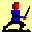
Kämpfer (Freiherr)Die Standardtruppe mit den rostigen Schwertern zu Spielbeginn. Das Beste, was ihr als einfacher Baron bekommen könnt.
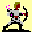
Bogenschützen (Graf)Ihr Vorteil: sie können sowohl über eine größere Distanz als auch im Nahkampf agieren.
Sowohl Reichweite als auch Munition steigen mit der Erfahrungsstufe.
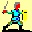
Infanterie (Landgraf)Eine Gruppe recht spartanisch ausgerüsteter Soldaten, gleichermaßen geeignet für Angriff und Verteidigung.
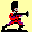
Musketiere (Markgraf)Die moderne Version der in die Jahre gekommenen Bogenschützen. Ihr Auftauchen markiert eine allmähliche Trendverschiebung im Kriegswesen: weg von den gepanzerten Ritterheeren hin zu den leicht armierten Soldaten mit hoher Feuerkraft.
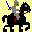
Kavallerie (Herzog)Etwa so stark wie Infanterie, aber sehr viel agiler. Mit zunehmender Erfahrung bekommt die Kavallerie mehr Bewegungspunkte, dadurch eignet sie sich besonders für schnelle Vorstöße und Flankenangriffe.
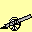
Artillerie (Erzherzog)Eine wichtige Distanzwaffe. Sie kann sogar Stadtmauern sprengen, ist aber sehr empfindlich gegenüber feindlichen Angriffen. Die Reichweite steigt mit der Erfahrung ebenso wie die Anzahl der Kanonenkugeln, die in der Schlacht hinter dem Symbol angezeigt wird.
Ritter (Fürst)
Edle Krieger im Dienste ihres Fürsten. Ihr geleisteter Rittereid macht es ihnen unmöglich, zu desertieren, denn jeder, der Ritter sein will, muss hochgemut, edelsinnig, freigebig, tadellos und ehrenfest sein.
Eine schlagkräftige Einheit ohne besondere Stärken oder Schwächen, die den Namen ihres jeweiligen Landes im Titel trägt.
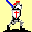
Kreuzritter (Kurfürst)Besonders gut bewaffnete und gepanzerte Ritter mit hoher Angriff- und Verteidigungsstärke. Nicht gerade preiswert in der Anschaffung, schlagen sie sich nur für Kurfürsten und Könige. Als Ritter sind auch die Kreuzritter besonders loyal gegenüber ihrem Herrn, ferner haben sie keine Angst vor Vampiren.
Held (König)
Der Held ist die mit Abstand stärkste und teuerste Einheit. Er prügelt sich nur für Könige, mit Ausnahme des einen Helden, den Ihr zu Beginn Eurer Amtszeit erhaltet.
Helden haben neben ihrer heißen Frisur eine individuelle Persönlichkeit und ein spezielles Attribut. Dieses kann z.B. eine besondere Rüstung oder eine nützliche Fähigkeit sein und bestimmt das Erscheinungsbild des Helden.
Helden sind äußerst loyal gegenüber ihrem Herrn und im Kampfe stets bis in die Haarspitzen motiviert.
Der Held folgt nicht der für andere Einheiten üblichen Karriereleiter, sonderen seiner ganz eigenen. Ihr könnt immer nur einen Helden zur Zeit besitzen, mit anderen Worten: es kann nur einen geben!
Söldnereinheiten, welche Ihr nicht im Laden kaufen könnt, die Euch vielmehr zufällig über den Weg laufen werden. Ein hoher Wert für Ruhm wirkt dabei wie ein Magnet. Ihre Anschaffung kostet nichts und ihr Sold fällt im allgemeinen geringer aus als bei den vergleichbar starken Truppen aus dem Katalog:
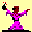
AlchimistenDie Sprengstoffexperten. Neben der Artillerie die einzige Einheit, die auch Stadtmauern durchbrechen kann.
Die etwas zur Schwächlichkeit neigenden Eierköpfe sollte man außerhalb der Reichweite von feindlichen Schwertern und Pfeilen halten.
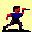
AssassinenLeise und geschickte Berufskiller mit vergifteten Klingen. Damit haben sie die Chance, auch überlegene Gegner mit einem einzigen Schlag zu töten. Je erfahrender die Assassinen, desto wahrscheinlicher wird solch ein kritischer Treffer.
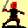
BerserkerEine Horde halbnackter Irrer mit hohem Angriffsfaktor, die ohne Rücksicht auf Verluste angreift. Demzufolge ist ihre Abwehr relativ schwach.
Berserker lassen sich nicht becircen und kämpfen wie rasend, wenn sie erst einmal Verletzungen erlitten haben.
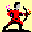
BrandschützenIm Kampf ebenso stark wie normale Bogenschützen, sind sie jedoch effektiver im Zerstören von Gebäuden, da sie mit brennenden Pfeilen schießen.
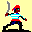
BukaniereGewissenlose, säbelrasselnde Freibeuter, deren seemännische Erfahrung ihnen erlaubt, in einer Schlacht Flüsse zu überqueren.
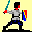
KnappenKnappen sind Soldaten, die vornehmlich im Dienst von Rittern stehen und diese im Kampf unterstützen. Jede Rittereinheit, die in Tuchfühlung zu Knappen steht, erhält einen Bonus von +1 auf ihre Angriffstärke.
Schließlich habt Ihr die Möglichkeit, altgediente Knappen selbst zu Rittern zu schlagen.
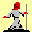
KnochenflickerLausige Kämpfer, dafür jedoch mit Heilkräften ausgestattet. Sie können einer freundlich gesinnten Einheit in der Schlacht Linderung verschaffen. Da sie sich kaum selbst verteidigen können, sollte man die Heiler tunlichst außerhalb der Reichweite des Gegners platzieren.
Knochenflicker bevorzugen den Dienst unter Herrschern, die selbst Heilende Hände haben.
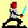
KriegsknechteEine universelle Söldnertruppe, die sich aus Schurken und gescheiterten Existenzen zusammensetzt. Kriegsknechte haben kein spezielles Attribut und neigen auch stark zur Desertation, dafür sind sie außerordentlich billig im Unterhalt.
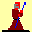
MöncheEine Gruppe von Kampfmönchen. Sie beherrschen die Selbstverteidigung und sind daher schwer zu treffen. Im Laufe der Zeit erlernen sie die Kampftechnik des mehrfachen Angriffs.
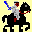
NomadenWüstenreiter, schneller, zäher und preiswerter als die reguläre Kavallerie. Schwein haben die Burschen auch noch, was will man also mehr?
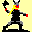
NordmännerHarte Männer aus dem Land der Fjorde, berüchtigt für ihre <Handlungsreisen>. Sind mit Wurfäxten ausgestattet, Reichweite und Angriffstärke steigen mit der Erfahrung.
Ungemein starke Einheit, einziges Manko ist ihre geringe Beweglichkeit.
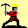
RandaleureLebende Abbruchbirnen. Im Zweikampf nicht besonders fit, liegt ihre Stärke vielmehr im Zerlegen von Stadtmauern und Gebäuden sowie dem Fällen von Bäumen. Da sie im Unterhalt sehr preiswert sind, stellen sie gerade in der frühen Spielphase einen wichtigen strategischen Faktor dar.
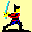
SamuraiGeschickte Schwertkämpfer aus dem Land der aufgehenden Sonne. Mit der Erfahrung steigt die Anzahl der Angriffsmöglichkeiten pro Kampfrunde.
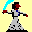
SarazenenDie Söhne der Wüste kämpfen erbarmungslos, wobei Allah allein ihr Schicksal lenkt.
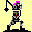
Schwarze RitterDie >Bösen< unter den Rittern. Sie sind ähnlich stark wie die Kreuzritter, allerdings nicht besonders loyal gegenüber ihrem Feldherren. Schwarze Ritter sind mit den gefürchteten Morgensternen ausgerüstet und dienen am liebsten einem Herrscher mit der Aura des Terrors.
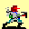
SchützenMit Armbrüsten bewaffnet eine hilfreiche Einheit für die Stadtverteidigung. Deutlich effektiver als Bogenschützen.
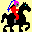
TatarenDie Bezeichnung für einen Mongolenstamm aus dem Reich der Goldenen Horde. Hervorragende Reiter, die kämpfen wie Berserker.
Tataren werden genau wie die Kavallerie befördert, sind aber noch stärker und schneller als diese.
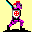
TemplerAngehörige eines obskuren Ritterordens. Gerüchten zufolge haben sie sich vom wahren christlichen Glauben entfernt und beten hinter düsteren Mauern zu dem Götzen Baphomet.
Ob man diesen Mähren Glauben schenkt oder nicht, sind diese Ritter doch eine Bereicherung für jedwedes Heer.
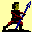
WachenWachen sind die Söldnertruppen für den schmalen Geldbeutel. Zur Verteidigung der Hauptstadt zu Spielbeginn ganz passabel.
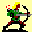
WaldläuferNaturburschen, die sich vorwiegend in Gebüschen herumdrücken. Sie sind exzellente Bogenschützen, sehr beweglich und haben dank ihrer Erfahrung mit allerlei übelriechenden Kräutern die Fähigkeit zur Regeneration während des Kampfes. Am liebsten dienen sie einem Herren mit Gaias Segen.
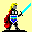
WalkürenWeibliche Berserker, ebenso liebreizend wie todbringend, lachen nicht über Blondinenwitze. An Kraft und Geschicklichkeit ihren männlichen Kollegen kaum nachstehend, haben sie sich trotzdem einen gewissen Charme bewahrt.
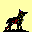
WölfeEin Rudel tollwütiger und ausgehungerter Köter, sehr schnell im Kampf. Wölfe werden besonders gefährlich, wenn sie Verletzungen erlitten haben.
Spezielle Einheiten, die nicht käuflich sind und nicht immer für jeden verfügbar.
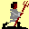
MilizKeine militärische Einheit im eigentlichen Sinne, sondern eine Gruppe aus Bürgern, die zur Verteidigung herangezogen werden, wenn weniger als 8 Truppen zur Verfügung stehen.
Die Miliz ist anfänglich die schwächste aller Einheiten und kann keine Erfahrung sammeln. Dafür kostet sie keinerlei Unterhalt und kämpft mit mehr Herz als die talergeilen Söldnereinheiten. Die Stärke der Miliz wächst schließlich mit der Zahl Eurer Einwohner.
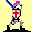
Paladine (Pietät)Paladine sind edle Ritter, die nur für die vermeintlich gute Sache kämpfen und dafür kein Geld verlangen. Nur mit Pietät könnt Ihr über Paladine verfügen. Mit Heiligen Lanzen bewaffnet die zweitstärkste Einheit im Spiel.
Vampire (Terror)
Diese bedauernswerten Geschöpfe sind Überträger einer tödlichen Krankheit, genannt Vampirismus. Wird eine gegnerische Einheit durch Vampire tödlich verletzt, verfällt sie in einen scheintoten Zustand. Sollte sie je wieder daraus erwachen, wird sie selbst vampirisch und zeigt die typischen Symptome Bleichsucht, Photophobie und fortschreitenden Wahnsinn. Gleichwie willenlos kämpft diese Einheit fürderhin für den Gebieter der Vampire. Letzterer kann nur ein Herrscher mit der Aura des Terrors sein.
Eine infizierte Einheit behält ihre körperlichen Attribute wie Angriffstärke oder Trefferpunkte bei, verliert aber ihre Waffen und ihre Identität. Jede stationierte Vampireinheit mindert die Zufriedenheit der Untertanen, kostet aber keinen Unterhalt. Vampire können sich nicht von Verletzungen erholen, da es ihnen an Vitalität und ausgewogener Ernährung mangelt.
Entgegen landläufigen Meinungen ist blanker Stahl immer noch das wirksamste Mittel gegen Vampire, die ebenso wenig übernatürliche Wesen sind wie Leprakranke.
Siehe auch:
Armeen
Stichworte: Alchimisten
Armeen
Als Landesfürst obliegt Euch die Führung gleich zweier unterschiedlicher Armeen: die des Heeres und die der Garde. Während Eure Garde die Hauptstadt beschützt und niemals verlässt, bildet das Heer Eure bewegliche Eingreiftruppe für Übergriffe auf fremde Länder, die Jagd auf marodierende Banden, aber auch als erstes Bollwerk zur Verteidigung Eures eigenen Landes.
Das Herzstück der Truppenverwaltung stellt das Armeedialogfenster dar, das Ihr unter dem Menüpunkt AKTIONEN|MILITÄR|TRUPPEN AUFSTELLEN findet. Dort könnt Ihr Einheiten rekrutieren, entlassen und beliebig zwischen beiden Armeen hin- und herschieben.
Siehe auch:
Buttonleiste:
| Truppen aufstellen |
Initiativpunkte
Initiativpunkte
Sie wurden mit der Version 1.22 eingeführt und stellen eine Begrenzung für Eure militärischen Aktionen dar. Jede Schlacht kostet Zeit an Vorbereitung, Marsch, diplomatischem Gerangel um Durchmarschrechte, Belagerung, Besatzung und so weiter...
Als Maß für diese Zeit dienen die Initiativpunkte (IPs). In jeder Runde erhaltet Ihr eine bestimmte Anzahl davon. Veranstaltet Ihr ein Manöver oder schlagt Ihr eine Schlacht, so wird Euch eine bestimmte Menge von Euren IPs abgezogen. Wenn Eurer >Kontostand< auf null gefallen ist, könnt Ihr in dieser Runde keine kriegerischen Aktionen mehr durchführen.
Die IP-Kosten bei einem Angriff auf ein fremdes Land sind von der Entfernung dieses Landes abhängig.
Ihr könnt jederzeit in den Krieg ziehen, sofern Ihr wenigstens einen IP übrig habt. Sollte Eurer Kontostand danach negativ sein, muss Euer Heer, dass den Angriff geführt hat, außerhalb Eures Landes überwintern und steht Euch frühestens in der nächsten Runde wieder zur Verfügung (d.h. es kann Euch nicht beschützen, wenn Ihr zwischenzeitlich angegriffen werdet).
IP-Schulden werden also mit in die nächste Runde geschleppt und mit den neu verteilten IPs verrechnet. Andererseits verfallen in einer Runde nicht genutzte IPs.
Der Krieg
Der Krieg
Sollte ein Mitspieler kurz vor der Krönung zum Kaiser stehen, könnt Ihr versuchen, ihn mit Krieg zu überziehen und nach erfolgreicher Schlacht sein Land zu stehlen oder seine Einwohner dahinzumetzeln (ist doch nur ein Spiel!). Da seine verteidigenden Einheiten, durch Stadtmauern geschützt, einen gewissen Bonus haben, solltet Ihr schon mit einer Übermacht angreifen, sofern Ihr kein geborener Schachgroßmeister seid.
Buttonleiste:
| Krieg führen | |
| Militärstatistik |
Kriegserklärung
Kriegserklärung
Um einen Krieg vom Zaun zu brechen, müsst Ihr zunächst einen passenden Gegner aussuchen. Sofern Ihr Initiativpunkte (IPs) übrig habt und wenigstens den Titel eines Grafen führt, gelangt Ihr durch die Anwahl des Menüpunktes MILITÄR|KRIEG FÜHREN in ein Dialogfenster mit einer Liste der Mitspieler und einer Landkarte, auf der die zehn Kaiser-Länder verzeichnet sind: Euer eigenes Land ist gelb. Eine graue Färbung bedeutet, dass das Land nicht am Spiel teilnimmt, also neutral ist. Diejenigen Länder, die Ihr problemlos in dieser Runde angreifen könnt, sind grün markiert. Die roten Länder dürft Ihr zwar ebenfalls angreifen, doch habt Ihr nicht genügend IPs, um Eurer Armee den sicheren Geleit nach Hause zu gewähren soll heißen, Euer Heer kommt in dieser Runde nicht mehr zurück.
Solltet Ihr mit dem ausgesuchten Land einen Friedensvertrag abgeschlossen haben, werdet Ihr gefragt, ob Ihr diesen wirklich brechen wollt. Im positiven Fall verliert Ihr durch einen derart hinterhältigen Akt einiges an Ruhm. Ein eventuell vorhandenes Handelsabkommen verliert durch die Kriegserklärung ebenfalls ihre Gültigkeit.
Der Angegriffene erhält nun die Möglichkeit, den Schauplatz des blutigen Gemetzels zu bestimmen:
AUF DEM SCHLACHTFELD bedeutet, den Angreifer im Grünen abzufangen, ohne Schutz der Stadtmauern, aber auch ohne das Risiko, dass Gebäude und Zivilisten zu Schaden kommen. Sollte sich der Verteidiger für diese Option entscheiden, muss der Angreifer zunächst auf dem Schlachtfeld gewinnen, bevor er auf die Hauptstadt des Verteidigers vorrücken kann, wo ihn die zweite Schlacht erwartet.
Da nur das Heer für einen Kampf auf dem Schlachtfeld in Frage kommt, steht diese Option nur zur Verfügung, wenn das Heer auch tatsächlich im Lande ist.
Beim STADTKAMPF genießen die verteidigenden Truppen einen Bonus von 100% auf ihre Abwehrstärke, sofern sich die jeweilige Einheit in der Stadt befindet und die angreifende Einheit nicht. Außerdem steht in der Stadt die Miliz zur Verfügung, die Eure Garde auffüllt, wenn Ihr weniger als 8 Einheiten besitzt.
Schließlich darf der Verteidiger seine Armee aufstellen: beim Kampf auf dem Schlachtfeld ist dies das Heer, vor der Stadt aber die Garde.
Siehe auch:
Die Schlacht
Die Schlacht
Die Schlacht läuft rundenweise ab, erst alle Einheiten des einen und dann des anderen Feldherren. Die jeweils aktuelle Einheit blinkt und ist am Zug, bis sie ihre Bewegungspunkte aufgebraucht hat, sei es durch Bewegen, Angreifen oder Betätigen des Buttons FERTIG.
Der Zustand der aktuellen Einheit erscheint im linken Statusfenster, derjenige der Zieleinheit im rechten:
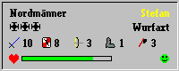
Erste Zeile: Name der Einheit und des Feldherren
Zweite Zeile: Level und Spezialattribut
Trefferpunkte (dahinter werden auch Blindheit und Bewusstlosigkeit angezeigt)
Die Einheiten des Angreifers können neben feindlichen Einheiten auch die sichtbaren Gebäude des Verteidigers attackieren und zerstören. Ein Angriff verzehrt im allgemeinen alle übrigen Bewegungspunkte einer Einheit, es sei denn, sie hat ein Spezialattribut, das ihr mehrere Angriffe pro Runde gestattet wie z.B. das Samuraischwert.
Siehe auch:
Kampfoptionen
Spezielle Kampfoptionen
Mit einem Rechtsklick auf eine Eurer Einheiten öffnet sich ein zusätzliches Menü mit Kampfoptionen für diese Einheit:
| Eingraben: | Die Einheit verschanzt sich bis auf Widerruf, wodurch sich ihre Verteidigungsstärke verdoppelt. Eingraben kostet alle Bewegungspunkte und hält solange an, bis die Einheit wieder aktiviert wird, bei einem Angriff Schaden erleidet oder sie die letzte Einheit ist, die in Eurem Heer übrig ist. |
Heilen: | Die Einheit konzentriert sich von nun an vollkommen auf ihre Wiederherstellung und erhält jede Runde eine 50%ige Chance, einen TP zu regenerieren. Dieser Effekt kumuliert mit dem Zauber Heilende Hände und dem Spezialattribut Regeneration.
Nachteil: die Einheit ist extrem verwundbar und verliert die Hälfte ihres Verteidigungswertes.
| Heilen kostet alle Bewegungspunkte und hält solange an, bis die Einheit wieder aktiviert wird, bei einem Angriff Schaden erleidet oder sie die letzte Einheit ist, die in Eurem Heer übrig ist. | |
| Aktivieren: | Mit dieser Option könnt Ihr eine Einheit, die sich heilt oder eingegraben hat, wieder aktiv am Kampgeschehen teilhaben lassen. |
| Warten: | Die nächsten Einheiten in der Armeeliste kommen vorher zum Zug. Entspricht dem Warten-Schalter unten im Schlachtfenster. |
Fertig: | Diese Kampfrunde für die aktuelle Einheit beenden.
| Entspricht dem Fertig-Schalter unten im Schlachtfenster. | |
| Abbrechen: | Optionsmenü ohne Aktion schließen |
Nicht aktive Einheiten werden auf dem Spielfeld als schwarze Schatten dargestellt, bis sie wieder aktiviert werden.
Besondere Regeln
Besondere Regeln
Wetter: Sollten die Streitkräfte von einem Wintereinbruch überrascht werden, so gelten einige geänderte Regeln:
- Die Motivation der angreifenden Truppen verringert sich in der Kälte
- Die Beweglichkeit aller Einheiten ist eingeschränkt
- Gefrorene Gewässer können betreten werden
en passant-Schlag: unter Umständen kann eine Einheit auch zuschlagen, wenn sie gar nicht am Zug ist und auch keine Bewegungspunkte mehr hat, nämlich dann, wenn sich eine feindliche Truppe, die in einem benachbarten Quadrat steht, aus dem Handgemenge weg zu bewegen versucht. Dieser en passant-Schlag wird automatisch vom Rechner ausgeführt und kostet die schlagende Einheit keine Bewegungspunkte.
Beispiel:
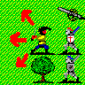 | Sollte der Held des Angreifers in dieser Situation versuchen, einen Schritt in eine der markierten Richtungen zu wagen, wird er automatisch von den Kreuzrittern und Rittern des Verteidigers attackiert werden. Die feindliche Artillerie kann als reine Distanzwaffe nicht zuschlagen! |
Umzingeln: Sollte eine Einheit von vier oder mehr gegnerischen Nahkampftruppen umzingelt werden, kommt sie das teuer zu stehen: da sie sich nicht nach allen Seiten gleichzeitig verteidigen kann, sinkt ihre effektive Verteidigungsstärke auf den halben Wert und wird so leichte Beute für die Angreifer. Auf diese Art lässt sich selbst der stärkste Held von eher durchschnittlichen Truppen klein hacken!
Siehe auch:
Das Ende des Krieges
Das Ende des Krieges
ist erreicht, wenn eine Seite vollständig vernichtet wurde oder aufgibt. Sollte der Aggressor die Schlacht auf dem Feld gewonnen haben, wird er gefragt, ob er seine Truppen zur Hauptstadt des Verteidigers vorrücken lassen möchte. Nur, wenn er diese zweite Schlacht ebenfalls siegreich für sich entscheiden kann, bekommt er Angreifer die willkürliche Gewalt über die eingenommene Stadt und kann zwischen folgenden Maßnahmen wählen:
Plündern: Der Sieger bereichert sich an der Staatskasse des Verlierers. Dabei kann auch Land requiriert werden, sofern beide Fürstentümer aneinandergrenzen.
Brandschatzen: Wahllos werden Gebäude des Verteidigers zerstört
Massakrieren: Für echte Kriegsverbrecher: die Zivilbevölkerung des Landes wird verfolgt und getötet.
Für den Angreifer scheint der Krieg lange nicht so risikoreich zu sein wie für den Angegriffenen. Alles, was er zu verlieren hat, sind einige Söldner und etwas von seinem Ruhm. Doch der Gegenschlag kommt vielleicht schon in der gleichen Runde...
Fortune
Glück bewahrt Krieger vor einigen unangenehmen Überraschungen wie z.B. dem Tod durch Vergiftung oder dem zeitweiligen Verlust des Bewusstseins oder des Augenlichtes
Armbrust
Projektile, die mit einer Armbrust abgefeuert werden, haben eine enorme Durchschlagskraft. Deshalb verringert sich die effektive Verteidigungsstärke des Ziels auf die Hälfte.
Camouflage
Die Einheit besitzt die Fähigkeit, so sehr mit der Umgebung zu verschmelzen, dass sie für Freund und Feind quasi unsichtbar wird. Geschosse, die auf solche Einheiten abgefeuert werden, haben nur die Hälfte der normalen Trefferchance.
Camouflage lässt sich nur im Grünen einsetzen, innerhalb einer Stadt ist diese Fähigkeit nutzlos.
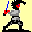
CharmeCharme kann bewirken, dass eine gegnerische Einheit im Kampf derart bezaubert wird, dass sie nur halbherzig zuschlägt. Charme wirkt nur im Handgemenge, betrifft daher keine Einheiten mit Distanzwaffen. Ferner sind einige Einheiten wie Berserker oder Helden von Natur aus immun gegen diesen Effekt.
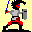
DrachenschildEin riesiger Schild, der effektiver vor allen möglichen Geschossen schützt.
Drachentöter
Ein schweres zweihändiges Schwert verleiht Eurem Helden einen Angriffsbonus von +2.
Entertainer
Ein solcher Held hat die Fähigkeit, Eure übrigen Einheiten im Kampf anzuheizen, was sich in einer allgemein höheren Motivation der Truppe niederschlägt.
Finesse
Ein besonders versierter Schwertkämpfer vermag schwache Gegner ohne Verlust von Bewegungspunkten zu attackieren, genauer gesagt: es besteht eine 50% Wahrscheinlichkeit, wenn das Verhältnis von Angriffstärke zu gegnerischer Verteidigungsstärke mindestens 4 beträgt (haben das alle verstanden???)
Glanz und Gloria
Ein solcher Held mehrt hie und da durch seine Heldentaten (z.B. Jungfrauen erschlagen oder Drachen beschützen) den Ruhm seines Herrn.
Güldene Brünne
Ein Plattenpanzer aus diesem Edelmetall verleiht Eurem Helden einen +2 Verteidigungsbonus.
Heilige Lanze
Verleiht dem Besitzer einen Trefferbonus von 50% gegen heidnische Truppen wie Sarazenen oder Samurai. Vampire erleiden doppelten Schaden!
Heilkräfte
Heilkräfte ermöglichen seinem Besitzer, sich selbst oder Verbündeten während einer Schlacht verlorene Trefferpunkte zurück zu geben. Auch Blindheit und Bewusstlosigkeit können so kuriert werden. Die Effektivität hängt dabei von der Erfahrung des Heilers ab.
Der Heilvorgang verzehrt alle Bewegungspunkte des Heilers, außerdem muss der Patient sich in einem der benachbarten Quadrate befinden.
Die Anzahl der Heilungsakte in jeder Schlacht ist begrenzt und wird im Statusfenster durch die Zahl hinter dem Symbol angezeigt.
Infektion
Vampire können gegnerische Einheiten infizieren, so dass diese selbst zu Vampiren werden und in der Schlacht die Seite wechseln.
Lehrmeister
Vermittelt sein Können an die anderen Einheiten Eurer Armee, die dadurch in jeder Runde einen zusätzlichen Erfahrungspunkt erhalten und somit schneller befördert werden.
Kampfstab
Die Waffe für den Geistlichen ermöglicht mehrere Attacken pro Kampfrunde, sofern genug Bewegungspunkte vorhanden.
Mithrilharnisch
Ein Panzerhemd aus dieser mythischen Silberlegierung, die leichter als Aluminium und widerstandsfähiger als Stahl ist, verleiht dem Helden zusätzlichen Schutz (+1) und mehr Agilität im Kampf.
Morgenstern
Der Morgenstern ist ein schlagender Beweis für den menschlichen Einfallsreichtum. Er schlägt nicht nur schmerzhafte Wunden, sondern schickt sein Opfer oft noch zusätzlich ins Reich der Träume und macht es dadurch völlig wehrlos.
Pechpfeile
Bogenschützen mit brennenden Pfeilen haben einen 300%-Bonus beim Angriff auf ein Gebäude (Stadtmauern können sie jedoch nicht in Brand setzen).
Samuraischwert
Der Samurai kämpft so schnell, dass er mehrere Angriffe pro Runde starten kann.
Schwimmer
Wasserratten können als einzige Flüsse überqueren, was sich in einer Schlacht als nützlich erweisen kann.
Sprengpulver
Nur mit Sprengpulver kann man Mauern einreißen, nützlich beim Überfall auf eine feindliche Stadt. Sollte eine feindliche Einheit mit Sprengpulver getroffen werden und überleben, besteht noch die Möglichkeit, dass sie durch die Explosion geblendet wird.
Regeneration
Die Einheit kann sich selbst erste Hilfe leisten und erholt sich schon im Kampf teilweise von ihren Verwundungen. Auch Unpässlichkeiten wie Koma und Blindheit sind schneller wieder behoben.
Raserei
Eine solche Einheit schlägt mit doppelter Angriffstärke zu, wenn sie verwundet wurde.
Vergiftete Klinge
Die Einheit hat die Chance, den Gegner mit einem einzigen kritischen Treffer zu töten. Die Wahrscheinlichkeit dafür steigt mit der Erfahrungsstufe der Einheit.
Wurfaxt
Einheiten mit Wurfäxten haben eine Reichweite größer als 1 und können sich daher aus einem unübersichtlichen Handgemenge heraushalten.
Mit zunehmender Erfahrung bekommt die Einheit mehr Munition, die aktuelle Zahl wird während der Schlacht im Statusfenster hinter dem Symbol angezeigt.
Duckmäuser
Wenn sich eine Einheit aus einem Handgemenge zurückzuziehen versucht, darf jede gegnerische, nahkampffähige Truppe einen Strafschlag gegen diese Einheit ausführen, den sogenannten en passant-Schlag.
Eine Einheit mit dem Spezialattribut Duckmäuser allerdings hat jeweils eine 50% Chance, keinen solchen Strafschlag zu erleiden, so dass diese Einheit sich leichter aus einem Nahkampf lösen kann, um der Vernichtung zu entgehen oder an anderer Stelle in den Kampf eingreifen zu können.
.
Diensteifer
Benachbarte Einheiten erhalten einen Bonus von 1 auf ihre Angriffstärke, sofern sie Ritter sind.
Demontage
Demontage-Einheiten sind Meister im Zerlegen von Gebäuden und Stadtmauern und können zudem Bäume fällen.
Angriffstärke
Bestimmt die Wahrscheinlichkeit, eine gegnerische Einheit zu treffen und den Schaden, der dem Gegner dadurch zugefügt wird. Wie bei allen Attributen gilt auch hier: je höher desto besser!
Verteidigungsstärke
Bestimmt die Wahrscheinlichkeit, vom Schlag einer feindlichen Einheit getroffen und verwundet bzw. getötet zu werden. Die Verteidigungsstärke verdoppelt sich, wenn die Einheit hinter Stadtmauern steht und der Angreifer von draußen anrennt.
Trefferpunkte
Ein Maß für den aktuellen Gesundheitszustand der Einheit. Bei einer Verwundung werden Punkte abgezogen, bei Null oder weniger Trefferpunkten ist die Einheit vernichtet. Besitzt der Eigentümer der Einheit Heilende Hände, so regenerieren sich die Trefferpunkte teilweise noch während des Kampfes.
Es gibt noch weitere Faktoren, welche die Gesundheit und damit auch die Kampfkraft einer Einheit beeinflussen:
Blindheit: Eine geblendete Einheit sieht weniger und kämpft daher auch schlechter.Blindheit ist die mögliche Folge eines Treffers mit Sprengpulver und kann mehrere Kampfrunden andauern.
Bewusstlosigkeit: Die Einheit ist auf einen Sprung rüber zu Morpheus, kann temporär nicht aktiv am Kampf teilnehmen und ist extrem verwundbar. Sollte eine komatöse Einheit getroffen werden, erwacht sie sofort wieder. Prinzipiell kann jeder erlittene Treffer zur Bewusstlosigkeit führen, besonders groß ist die Gefahr bei Schlagwaffen wie dem Morgenstern. Auch dieser unerfreuliche Zustand kann mehrere Runden andauern.
Nach einer Schlacht werden sämtliche Verwundungen und Indispositionen automatisch kuriert, sollte die Einheit das Gemetzel überleben.
Reichweite
Bezeichnet die Entfernung in Quadraten, die der Gegner höchstens entfernt sein darf, um ihn attackieren zu können. Bei den meisten Einheiten 1,d.h. nur für den Nahkampf geeignet. Einheiten wie Bogenschützen können auch aus der Distanz angreifen, solange der Gegner in Reichweite steht.
Schritte
Die Anzahl der Bewegungen, die eine Einheit pro Kampfrunde absolvieren kann, im allgemeinen aber nicht die Anzahl der Angriffe pro Runde. Nur einige wenige Einheiten wie Samurai oder Mönche schaffen auch mehrere Attacken pro Durchgang.
Salven
Bezeichnet im allgemeinen die Anzahl der Geschosse, die eine Einheit maximal abfeuern kann, bei Einheiten mit Heilkräften dagegen die Anzahl medizinischer Eingriffe in der Schlacht.
Einheiten, die Geschosse wie Pfeile, Kanonenkugeln oder Wurfäxte verwenden, haben in jeder Schlacht nur eine begrenzte Menge an Munition zur Verfügung. Ist die Munition aufgebraucht, kann die Einheit eventuell noch im Nahkampf eingesetzt werden. Einige Einheiten wie die Artillerie jedoch sind dann völlig unbrauchbar!
Motivation
Der Kampfgeist hat entscheidenden Einfluss auf die Stärke einer Einheit. Unmotivierte Truppen kämpfen nur halbherzig und desertieren womöglich während einer Schlacht. Die Motivation ist abhängig von der Beliebtheit des Feldherrn, der Erfahrungsstufe der Einheit und insbesondere vom Verlauf der Schlacht selbst.
Stufe/Rang
Mit der Zeit wird eine Einheit erfahrener, sie erhält dafür Erfahrungspunkte, besonders nach einem Manöver oder einer erfolgreichen Schlacht. Irgendwann steigt sie eine Stufe auf und bekommt einen höheren Rang. Das bringt meistens eine Verbesserung einiger ihrer Attribute mit sich, so erhöhen sich z.B. bei fast allen Einheiten die Trefferpunkte. Alle Einheiten mit Ausnahme des Helden starten mit dem Rang Fuchs (bzw. Offizier, falls Ihr den Zauber Heldentum gewählt habt) und können bis zum Haudegen aufsteigen (bzw. Elite).
Folgende Ränge gibt es im einzelnen:
| Symbol | Normale Einheiten | Held |
| Fuchs | Lehrling | |
| Offizier | Junker | |
| Haudegen | Knappe | |
| Elite | Ritter | |
| Recke | ||
| Kriegsherr | ||
| Halbgott |
Spezialattribute
Manche Einheiten verfügen über ein spezielles Attribut, das eine Modifikation der Basisattribute bewirken kann. Dabei handelt es sich um einen besonderen Gegenstand oder eine nützliche Eigenschaft:
Armbrust: halbiert gegnerische Verteidigung
Charme: halbiert gegnerische Trefferchance
Demontage: 100% Trefferwahrscheinlichkeit gegen Gebäude, Stadtmauern und Bäume
Drachenschild: halbiert Trefferchance von Geschossen
Drachentöter: Angriffsbonus +2
Duckmäuser: 50% Chance, sich aus Nahkampf zurückzuziehen ohne en passant-Schlag zu erleiden
Entertainer: erhöht Motivation aller verbündeten Truppen
Finesse: 50% Chance, einen mindestens 4 mal schwächeren Gegner ohne Punkteverlust zu attackieren
Fortune: Schutz gegen Vergiftung, Koma, Blindheit, Vampirismus
Glanz und Gloria: Herrscher bekommt zusätzlichen Ruhm
Güldene Brünne: Verteidigungsbonus +3
Heilige Lanze: 50% Trefferbonus gegen heidnische Truppen
Heilkräfte: kann verbündete Einheiten heilen
Infektion: überträgt Vampirismus auf getötetes Opfer
Lehrmeister: +1 Erfahrungspunkt jede Runde für restliche Armee
Kampfstab: mehrere Angriffe pro Kampfrunde
Mithrilharnisch: Schutz +1 und Schritte +1
Morgenstern: kann Opfer bewusstlos schlagen
Pechpfeile: brennende Pfeile haben leichtes Spiel mit Gebäuden
Raserei: verdoppelt Trefferwahrscheinlichkeit und Schaden bei Verletzung
Regeneration: pro Kampfrunde 50% Chance, dass 1 Trefferpunkt zurückkommt
Samuraischwert: mehrere Angriffe pro Kampfrunde
Schwimmer: kann Flüsse überqueren
Sprengpulver: zerstört Stadtmauern und blendet Opfer
Vergiftete Klinge: kritischer Treffer bewirkt sofortigen Tod des Opfers
Wurfaxt: Reichweite größer als eins
Ambassador
Dieser Zauber macht Euch zum perfekten Diplomaten und Außenpolitiker. Ihr habt jederzeit den vollen Überblick über Eure Konkurrenten, zahlt weniger für Saboteure und könnt von Euren Mitspielern ohne Ruhmverlust Tribute erpressen.
Bienenfleiß
Dieser Zauber bewirkt, dass Eure Einwohner fleißiger als üblich arbeiten. Damit steigen die Erträge der Marktplätze und Kornmühlen.
Engelszungen
Ihr erhaltet eine charismatische Aura. Die Einwohner sind zufriedener, die Produktivität steigt und Revolutionen werden seltener.
Ferengicharme
Dank dieses Zaubers entwickelt Ihr ein außerordentliches Verhandlungsgeschick und bekommt Gebäude und neue Truppen billiger.
Gaias Segen
Ein Spruch, der Euer Land fruchtbarer macht. Ihr werdet eins mit der Natur. Missernten werden niemals zum Problem.
Heilende Hände
Dieser Spruch hat zwei Effekte: in Friedenszeiten vermindert sich die Sterberate der Bevölkerung, in der Schlacht erholen sich Eure eigenen Truppen teilweise von ihren Verwundungen.
Heldentum
Ihr bekommt einen besseren Draht zu Euren Soldaten. Alle neuen Truppen starten bereits mit dem Rang Offizier und können bis zur Elite aufsteigen, ein Rang, der anderen verwehrt bleibt.
Karma
Ein Spruch, der aus Euch postnatal ein Sonntagskind macht. Gute Ereignisse werden angezogen, Katastrophen treten seltener ein.
Pietät
Verwandelt Euch in eine Art Heiligen. Das beeindruckt nicht nur das Volk, sondern auch die Kirche dermaßen, dass sie keine Talerforderungen stellt. Außerdem könnt Ihr als Scheinheiliger die Einheit Paladine einsetzen.
Terror
Unterstützt Euch bei der Errichtung einer Schreckensherrschaft. Als Tyrann schürt Ihr Angst sowohl bei Euren Feinden als auch bei Euren Untertanen, die weit weniger zufrieden sind als unter einem netten Monarchen. Dafür vermögt Ihr Vampire im Kampf einzusetzen, die sich wie Unkraut wuchernd vermehren und feindliche Truppen vor Furcht erzittern lassen!
Feldmarschall
Dieser Zauber verwandelt Euch in einen begnadeten Militärstrategen, der sein Heer schneller und zielsicherer durch fremde Lande führen kann und der deshalb in jeder Runde einen zusätzlichen Initiativpunkt erhält.
Chevalerie
Das Rittertum, ein aussterbendes Paradigma, hat es Euch angetan. Eure Ritter danken es Euch, indem sie weniger Lehen von ihrem Feudalherrn verlangen und Knappen kommen von weit her, um in Eurem Land Unterweisung zu suchen.
Armeestärke
Sie berechnet sich im Spiel aus der Summe der Angriff- und Verteidigungsstärken aller Einheiten eines jeweiligen Herrschers. Nach dieser Milchmädchenrechnung hätte eine Armee von 4 erfahrenen Kreuzrittern die gleiche Stärke wie eine Armee von 8 erfahrenen Kämpfern, was im Kampf letztlich natürlich ganz anders aussieht (hier sollten die Kreuzritter deutlich die Nase vorn haben, allein wegen ihrer größeren Beweglichkeit und ihrer höheren Motivation).
Hufe: auch Hube genannt. Mittelalterliche Flächeneinheit, entspricht etwa 40 unserer heutigen Hektar.
Hilfen zu Kaiser
Kaiser verfügt über dreierlei Hilfesysteme, die Euch Anleitung geben wollen, sofern Ihr der Kunst des Lesens mächtig seid:
(1) Eine detaillierte Übersicht mit Spielregeln erscheint durch Anklicken des Menüpunktes HILFE.
(2) Die Hilfe zu Dialogfenstern wird durch Anklicken des Fragezeichens im Fenster aktiviert.
(3) Die Hilfe zur Buttonleiste (links von der Landkarte) erscheint durch Rechtsklick auf das entsprechende Icon, auch sonst gibt es mit der rechten Maustaste einiges zu entdecken...
Spieleinstellungen
1. Das Menü Einstellungen
| Geschichtsschreibung | Gibt an, ob die Autosave-Funktion aktiviert ist (Voreinstellung). Wenn dies der Fall ist, wird zu Beginn jedes Spielzuges der Spielstand in der Datei autosave.ksr gesichert, um das Spiel im Falle eines Absturzes wiederaufnehmen zu können. |
| Krach und Geschrei | Wave-Sound ein- oder ausschalten. Hinweis: in der Schlacht werden Sounds auch dazu benutzt, die Bewegungen der Einheiten zu synchronisieren. |
| Schalmeienklänge | MIDI-Sound ein- oder ausschalten |
| Auflösung | Größe des Kaiserfensters in Pixel einstellen. Ab Version 1.22 könnt Ihr auch in 800x600 spielen. |
| Berichte | Nur die hier ausgesuchten Berichte erhaltet Ihr automatisch zu Rundenbeginn. Kann jeder Spieler frei wählen. Standardberichte sind diejenigen, die schon in Version 1.20 oder früher vorhanden waren: Klatsch & Tratsch, Bevölkerungsentwicklung, Staatshaushalt und die Kornverteilung. |
Ländernamen | Ab V1.22 könnt Ihr hier die zehn vorgegebenen Fürstentümer nach Belieben umbenennen.
Dazu erscheinen Eingabefelder in geographischer Ordnung, in die Ihr die neuen Namen und (wichtig für die Landesritter) die zugehörigen attributiven Adjektive eintippen könnt.
| Die Änderungen sind globalen Ausmaßes, d.h. sie betreffen jedes Spiel (auch das aktuelle!). |
2. Die Datei kaiser.ini
Diese liegt im gleichen Verzeichnis Eures Elektronenrechners wie die Datei kaiser.exe und bietet Euch eine Fülle weiterer Einstellmöglichkeiten, sofern Ihr Euch nicht zu schade seid, einen Texteditor zu verwenden.
Geöffnet sieht ihr Inhalt etwa so aus (beachtet bitte, dass Ihr nur Werte rechts vom Gleichheitszeichen ändern dürft!):
| Eintrag | Bedeutung |
| [Kaiser] | Titel (nicht ändern!) |
| Geschichtsschreibung=an | Autosave (an oder aus) |
| Krach & Geschrei=an | Wavesound (an oder aus) |
| Schalmeienklänge=aus | Midisound (an oder aus) |
| Auflösung=800x600 | Auflösung (640x480 oder 800x600) |
Hintergrund rot=255
Hintergrund grün=255
| Hintergrund blau=172 | Die Hintergrundfarbe der Dialogfenster im RGB- System. Für jede der drei Grundfarben könnt Ihr einen Wert zwischen 0 und 255 wählen. |
Delta X=0
| Delta Y=0 |
Auf einigen Systemen (z.B. bei großen Systemschriften oder unter Linux mit dem Emulator Wine) wird das Fenster mit dem Schlachtfeld leider nicht in der richtigen Größe dargestellt.
| Mit Hilfe dieser beiden Variablen könnt Ihr die Breite (X) und Höhe (Y) manuell anpassen. Delta Y=20 bedeutet z.B., dass das Fenster 20 Pixel höher wird. |
| Schlacht-Timer=400 | Die Dauer des Kampfzuges von CP Einheiten (in Millisekunden). Bestimmt auch die Frequenz, mit der menschengesteuerte Einheiten blinken, wenn sie am Zug sind. Minimum ist 50, Voreinstellung 400ms. |
Sachsen=Sachsen
Sächsische=Sächsische
Holstein=Holstein
Holsteinische=Holsteinische
Hessen=Hessen
Hessische=Hessische
Bayern=Bayern
Bayerische=Bayerische
Preußen=Preußen
Preußische=Preußische
Baden=Baden
Badische=Badische
Thüringen=Thüringen
Thüringische=Thüringische
Westfalen=Köln
Westfälische=Kölsche
Böhmen=Böhmen
Böhmische=Böhmische
Franken=Franken
| Fränkische=Fränkische | Die Ländernamen und ihre Adjektive, wie Ihr sie im Menü eingestellt habt. Links vom Gleichheitszeichen stehen die mit Kaiser >mitgelieferten< Namen, denen Ihr auf der rechten Seite neue verpassen könnt. |
Otto=Horst
Harald=Rolandbert
Helmbrand=Helmbrand
Ludwig=Ludwig
Pernhart=Pernhart
Bertram=Bertram
Theodrich=Theodrich
Wilhelm=Wilhelm
Burgfried=Burgfried
| Friedrich=Friedrich | Die Namen der Computerplayer (die Sterne sind nicht notwendig und dienen nur zur Unterscheidung zwischen Menschen und Blechköppen). |
Spieler0=Stefan
Spieler1=Opferlamm
Spieler2=Arme Sau
Spieler3=
Spieler4=
Spieler5=
Spieler6=
Spieler7=
Spieler8=
| Spieler9= | Die Voreinstellungen für die menschlichen Spielernamen. Sie werden automatisch in der kaiser.ini gespeichert, wenn Ihr ein neues Spiel startet und die Spieler ihre Namen eingeben. |
Letzter Pfad=D:\Games\Kaiser\mail.ksr
Letzte Datei=mail.ksr
| Name und Pfad des zuletzt benutzten Savefiles (nicht ändern, dient als Information für die Quickload-Funktion mittels STRG+L) |
Bem.: Änderungen in der kaiser.ini werden erst nach einem Neustart von Kaiser wirksam.
Details und Tabellen
Details und Tabellen
Inhalt
1 Zauber
2 Militär
2.1 Der Zweikampf
2.2 Attribute der Standardtruppen
2.3 Attribute der Söldnertruppen
2.4 Attribute der Spezialtruppen
2.5 Der Held
2.6 Spezialattribute
2.7 Ränge und Erfahrungspunkte
2.8 Initiativpunkte
3 Ruhm
1. Zauber
| Zauber | Effekt | Wert |
| Ambassador | Kosten für Saboteure | - 50% |
| Vollständiger Überblick über Konkurrenten | ||
| Feindliche Armeen ausspionieren | ||
| Ruhmverlust bei Tributforderung | 0 | |
| Bienenfleiß | Einnahmen aus Mühlen und Märkten | + 25 % |
| Salz-, Bier- und Weinproduktion | + 25% | |
| Chevalerie | Landforderung von Lehensrittern | - 50% |
| Wahrscheinlichkeit für Auftreten von Knappen | + 3 % (Ruhm 0) | |
| +10 % (Ruhm 100) | ||
| Engelszungen | Zufriedenheit der Bevölkerung | +15 % |
| Feldmarschall | Bonus auf Initiativpunkte je Runde | + 1 |
| Ferengicharme | Kosten für den Bau von Gebäuden | - 25 % |
| Kosten für die Rekrutierung von Standardtruppen | - 25 % | |
| Landpreis Extremwerte | +- 5 % | |
| Verkaufspreise für Güter | + 5 % | |
| Gaias Segen | Ausschluss der Ernteereignisse Dürre und Regen | |
| Wahrscheinlichkeit für Auftreten von Waldläufern | + 3 % (Ruhm 0) | |
| +10 % (Ruhm 100) | ||
| Heilende Hände | Normale Sterberate (ohne Krieg und Katastrophen) | -50 % |
| Wahrscheinlichkeit, dass verwundete Einheit 1 | ||
| Trefferpunkt pro Kampfrunde regeneriert | 50 % | |
| Wahrscheinlichkeit für Auftreten von Knochenflickern | + 3 % (Ruhm 0) | |
| +10 % (Ruhm 100) | ||
| Heldentum | Startbonus für rekrutierte Einheiten | Rang Offizier |
| Einheiten desertieren nicht in Friedenszeiten | ||
| Rang Elite erreichbar | ||
| Karma | Wahrscheinlichkeit für Auftreten negativer Ereignisse | -50 % |
| Wahrscheinlichkeit für Auftreten positiver Ereignisse | erhöht (ereignisabhängig) | |
| Wahrscheinlichkeit für Auftreten von Söldnern | +8 % (Ruhm 0) | |
| +50 % (Ruhm 100) | ||
| Pietät | Zufriedenheit der Bevölkerung | +5 % |
| Ausschluss des Ereignisses Spende an den Papst | ||
| Wahrscheinlichkeit für Auftreten von Paladinen | 7 % (Ruhm 0) | |
| 20 % (Ruhm 100) | ||
| Terror | Wahrscheinlichkeit für Auftreten von Vampiren | 100 % (einzige Einheit) |
| Zufriedenheit der Bevölkerung je Vampireinheit | -1% | |
| Sold für Schwarze Ritter | -67 % | |
| Wahrscheinlichkeit für Auftreten von Schw.Rittern | + 3 % (Ruhm 0) | |
| +10 % (Ruhm 100) |
2. Militär
2.1 Der Zweikampf
Wenn eine Einheit A sich anschickt, eine feindliche Einheit D anzugreifen, wird der Ausgang dieser Attacke von den Attributen beider Einheiten und dem Zufall bestimmt. Der Angriff teilt sich in 3 Phasen auf:
1. Phase - bestimmen, ob Angreifer sein Opfer getroffen hat
Um festzustellen, ob A seinen Gegner D überhaupt mit seiner Attacke trifft, werden die effektive Angriffstärke () von A und die effektive Verteidigungsstärke () von D gegeneinander ausgewürfelt.
Beispiel: der Held A hat eine Angriffstärke von 12
der Kreuzritter D hat eine Verteidigungsstärke von 8
Beide würfeln nun mit (virtuellen) Würfeln, deren Seitenzahlen diesen Werten entsprechen. Wenn es A gelingt, eine höhere Augenzahl als D zu würfeln, so hat er D getroffen.
Beispiel: Held A würfelt mit seinem 12-seitigen Würfel eine 6
Kreuzritter D erreicht mit seinem 8-seitigen Würfel nur eine 5
=> A trifft D
Falls es A nicht gelungen ist, D zu treffen, ist der Zweikampf für diese Runde beendet.
Ansonsten geht es weiter mit Phase 2.
2. Phase - Schaden bestimmen, den das Opfer einstecken muss
Der Schaden wird durch die Angriffstärke des Angreifers bestimmt und zwar mit einem Würfel, dessen Seitenzahl ein Drittel der Angriffstärke beträgt.
Beispiel: Held A erhält einen Würfel mit (12/3 =) 4 Seiten, d.h. der Schaden, den er D zufügen kann, liegt zwischen 1 und 4 Punkten.
3. Phase - Schaden zufügen
Die Schadenspunkte aus Phase 2 werden dem Opfer D von seinen Trefferpunkten () abgezogen. Sollten diese dadurch auf einen Wert von Null oder darunter fallen, so gilt D als vernichtet.
Sollte D überlebt haben, wird noch entschieden, ob er durch den Treffer k.o. geht oder erblindet. Die Wahrscheinlichkeit dafür hängt sehr stark von den Erfahrungsstufen der beiden Einheiten und ihren speziellen Attributen ab. So kann ein Angreifer sein Opfer mit jeder beliebigen Waffe bewusstlos schlagen, mit Morgensternen aber steigt die Wahrscheinlichkeit enorm an. Nur Angreifer, die Sprengpulver einsetzen, können ihre Gegner blenden. Je unerfahrener das Opfer dabei ist, desto schlimmer der Effekt.
2.2 Attribute der Standardtruppen
Einheit | | | | | | | Sold | Kosten
| [ | Spezialattribut](#k_spezial) | Titel | |||||||||
| Kämpfer | 3 (+) | 3 (+) | 1 | 1 | 3 + | 100 | 500 | 1 | Freiherr | ||
| Bogenschützen | 3 (+) | 2 | 3 + | 1 | 2 (+) | 3 + | 500 | 2500 | 1 | Graf | |
| Infanterie | 4 (+) | 4 (+) | 1 | 1 | 4 (+) | 800 | 4000 | 2 | Landgraf | ||
| Musketiere | 5 (+) | 2 | 3 + | 1 | 2 (+) | 4 + | 900 | 4500 | 2 | Markgaf | |
| Kavallerie | 5 | 4 | 1 | 1 + | 4 + | 1000 | 5000 | 2 | Herzog | ||
| Artillerie | 6 | 1 | 4 + | 1 | 1 (+) | 4 + | 4000 | 15000 | [3 | Sprengpulver](#3lntx8) | Erzherzog |
| Ritter | 6 (+) | 5 (+) | 1 | 2 | 6 + | 6000 | 21000 | 3 | Fürst | ||
| Kreuzritter | 7 (+) | 7 (+) | 1 | 2 | 7 + | 12000 | 32000 | 4 | zufällig | Kurfürst | |
| Held | 7 + | 7 + | 1 | 2 (+) | 7 + | 0 | 100000 | 1 | zufällig | König |
2.3 Attribute der Söldnertruppen
| Einheit | | Sold * | Spezialattribut | Titel | |||||
| Alchimisten | 2 + | 1 | 3 + | 1 | 1 | 2 + | 800 | Sprengpulver | Markgraf |
| Assassinen | 6 (+) | 4 (+) | 1 | 1 | 5 + | 960 | Vergift. Klinge | Herzog | |
| Berserker | 9 + | 4 | 1 | 1 | 6 + | 4000 | Raserei | Herzog | |
| Brandschützen | 3 (+) | 2 | 3 + | 1 | 2 (+) | 3 + | 180 | Pechpfeile | Graf |
| Bukaniere | 6 (+) | 5 (+) | 1 | 2 | 6 + | 2600 | Schwimmer | Markgraf | |
| Knappen | 4 (+) | 4 (+) | 1 | 1 | 4 | 600 | Diensteifer | Landgraf | |
| Knochenflicker | 1 | 1 | 1 | 1 | 2 | 3 + | 400 | Heilkräfte | Landgraf |
| Kriegsknechte | 5 (+) | 4 (+) | 1 | 1 | 4 + | 60 | Graf | ||
| Mönche | 5 (+) | 7 | 1 | 1 + | 4 + | 1400 | Kampfstab | Markgraf | |
| Nomaden | 5 | 3 | 1 | 2 | 5 | 960 | Fortune | Markgraf | |
| Nordmänner | 8 + | 7 (+) | 2 + | 1 | 8 + | 2 + | 7200 | Wurfaxt | Kurfürst |
| Randaleure | 2 + | 2 + | 1 | 1 | 2 + | 120 | Demontage | Freiherr | |
| Samurai | 7 (+) | 7 | 1 | 1 + | 7 (+) | 2400 | Samuraischwert | Erzherzog | |
| Sarazenen | 7 (+) | 4 (+) | 1 | 2 | 6 + | 2100 | Fortune | Herzog | |
| Schützen | 4 | 2 | 4 + | 1 | 2 + | 4 + | 300 | Armbrust | Freiherr |
| Schwarze Ritter | 7 (+) | 7 (+) | 1 | 2 | 7 + | 6000 | Morgenstern | Fürst | |
| Tataren | 6 (+) | 5 | 1 | 2 + | 5 + | 2700 | Raserei | Markgraf | |
| Templer | 8 (+) | 7 (+) | 1 | 2 | 7 + | 6400 | Fortune | Fürst | |
| Wachen | 2 (+) | 2 (+) | 1 | 1 | 2 + | 50 | Freiherr | ||
| Waldläufer | 4 (+) | 4 (+) | 4 + | 1 + | 3 + | 5 + | 500 | Regeneration | Markgraf |
| Walküren | 7 (+) | 6 (+) | 1 | 2 | 6 + | 3600 | Charme | Fürst | |
| Wölfe | 4 (+) | 3 (+) | 1 | 2 + | 3 + | 20 | Raserei | Freiherr |
2.4 Attribute der Spezialtruppen
| Einheit | | Sold * | Spezialattribut | Titel | |||||
| Miliz | 1 | 1 | 1 | 1 | 1 | 0 | Herr | ||
| Paladine | 8 (+) | 8 (+) | 1 | 2 | 8 + | 0 | Heilige Lanze | Fürst (Pietät) | |
| Vampire | 7 | 5 | 1 | 2 | 5 + | 0 | Infektion | Herr (Terror) |
+: Wert erhöht sich mit steigendem Level
(+):Wert erhöht sich eventuell mit steigendem Level
*: Sold bei Ruhm 0 (bei 100 nur die Hälfte)
2.5 Der Held
Einige Basisattribute des Helden erfahren bei seiner >Geburt< eine Modifikation, je nachdem welches Spezialattribut er besitzt:
Die Werte in Klammern geben jeweils den maximal möglichen Wert an (Rang Halbgott).
Die Trefferpunkte des Helden sind nach oben hin in der Praxis quasi unbegrenzt - der höchste Level, den ein Held erreichen kann, ist Halbgott+99!
2.6 Spezialattribute
| Name | Effekt | Wert |
| Armbrust | Schaden bei Distanzangriff | +100% |
| Camouflage | Verteidigung gegen Geschosse (außerhalb der Stadt) | 100% |
| Unsichtbarkeit außer bei Angriff | ||
| Charme | Chance, von (nicht charmeresistentem) Gegner getroffen zu werden | -50% |
| Demontage | Chance, Gebäude, Stadtmauern und Bäume zu zerstören | 100% |
| Diensteifer | Angriffstärke für alle Rittereinheiten in Nachbarquadraten | + 1 |
| Drachenschild | Verteidigungsstärke | +1 (Held) |
| Chance, von gegnerischen Geschossen getroffen zu werden | -50% | |
| erlittener Schaden bei Angriff eines Drachen (*) | -50% | |
| Drachentöter | Angriffstärke | +2 |
| Schaden gegen Drachen (*) | +100% | |
| Duckmäuser | Chance, sich aus Nahkampf zurückzuziehen ohne en passant-Schlag | 50% |
| Entertainer | Motivation aller verbündeten Einheiten | +25% |
| Finesse | Chance, einen Gegner mit def<=4*atk ohne Bewegungsverlust zu attackieren | 50% |
| Fortune | Chance, von Blindheit, Bewusstlosigkeit, Vampirismus oder Gift befallen zu werden oder bei Rückzug verloren zu gehen | 0% |
| Glanz und Gloria | Chance, dass der Herrscher pro Runde einen Extrapunkt Ruhm gewinnt | 50% |
| Güldene Brünne | Verteidigungsstärke | +2 |
| Heilige Lanze | Chance, eine heidnische Truppe zu treffen | +50% |
| Schaden gegen Vampire | +100% | |
| Heilkräfte | Heilung von verbündeten Einheiten (nur in Nachbarquadraten) | 1 bis Rang TP |
| Infektion | überträgt Vampirismus auf das von Vampir getötete Opfer | |
| Lehrmeister | Erfahrungspunkte für die gesamte Armee je Spielrunde | +1 |
| Kampfstab | mehrere Angriffe pro Runde | Anzahl = Schritte |
| Mithrilharnisch | Verteidigungsstärke | +1 |
| Schritte | +1 | |
| Morgenstern | Chance, getroffene Gegner k.o. zu schlagen | +25% (Haudegen) |
| Pechpfeile | Chance, Gebäude zu zerstören | +200% |
| Raserei | Chance, einen Gegner zu treffen (Voraussetzung: Einheit ist verwundet) | +100% |
| Schaden bei Treffer (Voraussetzung: Einheit ist verwundet) | +100% | |
| Regeneration | Chance, am Ende einer Kampfrunde einen Trefferpunkt zu regenerieren | 50% |
| Samuraischwert | mehrere Angriffe pro Runde | Anzahl = Schritte |
| Schwimmer | Überquerung von Flüssen | |
| Sprengpulver | Zerstörung von Stadtmauern | |
| Chance, getroffenen Gegner zu blenden | 25% (Haudegen) | |
| Vergiftete Klinge | Chance, Gegner mit einem einzigen Treffer zu töten (unendlicher Schaden) | 12% (Haudegen) |
| Wurfaxt | Angriff aus der Distanz |
(*) nur der Vollständigkeit halber. Eine solche Spezies dürfte im 15.Jahrhundert als ausgestorben gelten.
2.7 Ränge und Erfahrungspunkte
Folgendermaßen sammeln Einheiten ihre Erfahrungspunkte (EP):
| Für jede Spielrunde | 1 |
| Manöver | 1 bis 5 |
| Siegreiche Schlacht | 8 |
| pro getötetem Feind | 1 |
Hat eine Einheit eine gewisse Zahl an EP erreicht, wird sie befördert und erhält einen höheren Rang, wobei sich ihre Attribute verbessern.
| Symbol | Normale Einheiten | Held | Nötige EP |
| Fuchs | Lehrling | - | |
| Offizier | Junker | 10 | |
| Haudegen | Knappe | 22 | |
| Elite | Ritter | 36 | |
| Recke | 52 | ||
| Kriegsherr | 70 | ||
| Halbgott | 90 | ||
| Halbgott+1 | 112 | ||
| Halbgott+2 | 136 | ||
| ... | ... | ||
| Halbgott+99 | 10692 |
2.8 Initiativpunkte
IPs werden zu Rundenbeginn verteilt:
| Minimum | 2 |
Bonus für Ruhm: | +1 (Ruhm>50)
| +2 (Ruhm 100) | |
| Bonus für Zauber Feldmarschall | +1 |
Folgende Operationen kosten IPs:
| Manöver | 1 |
| Marodeure ausräuchern | 1 |
| Angriff auf Nachbarland | 2 |
| Angriff auf weiter entferntes Land | 3 bis 4 |
3. Ruhm
Möglichkeiten zur Ruhmvermehrung
| Ereignis | Ruhm |
| Beförderung | +10 |
| Fertigstellung Palast | +10 |
| Fertigstellung Kathedrale | +20 |
| Initiative für erfolgreiches Handelsabkommen | +2 |
| Abschluss Friedensvertrag | +1 (pro 5 Jahre Dauer) |
| Knappen zu Rittern schlagen | + 1 |
| Ritter beleihen | + 2 |
Möglichkeiten zur Ruhmverminderung
| Ereignis | Ruhm |
| Zufriedenheit der Bevölkerung < 50% | -2 |
| Schulden am Ende einer Runde | -1 |
| Handelsabkommen lösen | -2 |
| Beschädigung Palast | -10 |
| Beschädigung Kathedrale | -20 |
| Tributforderung an Mitspieler | -1 |
| Tributzahlung von Sklaven, Taler oder Land | -5 |
| Aufstand (beschwichtigt) | -10 |
| Aufstand (mit Degradierung) | -50 |
| Massaker anrichten | -30 |
| Bruch eines Friedensvertrages | -50 |
Rund um die Schlacht
| Ereignis | Ruhm |
| Kriegserklärung an militärisch unterlegenen Gegner | -5 |
| Kriegserklärung an Gegner mit niedrigerem Titel | -4 |
| Kriegserklärung an Gegner, der keine Truppen besitzt | -20 |
| Verteidiger stellt sich auf dem Schlachtfeld | +3 |
| Angreifer verliert gegen unterlegenen Verteidiger | -10 |
| Angreifer verliert gegen überlegenen Verteidiger | -3 |
| Angreifer schlägt überlegenen Verteidiger | +3 |
| Angreifer schlägt unterlegenen Verteidiger | +1 |
| Angreifer schlägt Verteidiger mit höherem Titel | +1 |
| Angreifer zieht sich vor unterlegenem Verteidiger zurück | -5 |
| Angreifer zieht sich vor überlegenem Verteidiger zurück | -2 |
| Verteidiger siegt über militärisch stärkeren Angreifer | +5/+10 (Aufgabe/Sieg) |
| Verteidiger siegt über militärisch schwächeren Angreifer | +4/+7 (Aufgabe/Sieg) |
| Verteidiger siegt über Angreifer mit höherem Titel | +1/+2 (Aufgabe/Sieg) |
| Verteidiger verliert gegen unterlegenen Angreifer | -7 |
| Verteidiger verliert gegen überlegenen Angreifer | +1 |
| Verteidiger lässt alle seine Truppen vernichten | -3 |
| Verteidiger gibt gegen unterlegenen Angreifer auf | -7 |
| Verteidiger gibt auf | -2 |
Tips zum Spiel
Stichworte: Erzherzog, Feldmarschall, Feldmarschall
Wie man Kaiser wird
Hier ein paar Ratschläge von einem, der es wissen sollte:
Einwohnerpolitik
Zu Beginn des Spiels ist es oft günstig, das Wachstum der Bevölkerung gering zu halten, bis genug Taler durch Landhandel und Gebäude verdient sind, um ein explosives Wachstum zu finanzieren.
Allerdings müsst Ihr aufpassen, karrieremäßig nicht zu weit gegenüber Euren Konkurrenten zurückzufallen. Hier ist Fingerspitzengefühl gefragt! Es ist relativ einfach, viel Geld zu machen, wenn die Bevölkerung sich nicht vermehrt. Um das Spiel zu gewinnen, müsst Ihr aber am Ende Eure Anfangspopulation verzehnfacht haben (was lange dauert)!
Land und Gebäude
Handelt von Beginn an mit Land, um zu Talern zu kommen. Zu Anfang ist die Gewinnspanne gewaltig (mehr als 100%). Kaufen bei 15 bis 20 Talern und abstoßen bei Preisen über 30.
Später wird das Land teurer, dafür habt Ihr mehr Kapital. Der smarte König kauft unter 50 und verkauft bei 50...60 Talern.
Faustregel für den Bau von Mühlen und Märkten: kauft nur so viele davon, dass ihre Anzahl gleich der Zahl Eurer Einwohner geteilt durch 100 ist. Damit baut Ihr genau das Land voll, welches Ihr sowieso für die Ernährung Eurer Leute benötigt. Überschüssiges Land solltet Ihr bei gutem Verkaufspreis verhökern.
Diplomatie
Abgeschlossene Handelsverträge bringen zusätzliche Einnahmen und Ruhm (falls Ihr das Abkommen vorgeschlagen habt).
Vorsicht, wenn ein CP (Computer-Player) Euch ein Friedensangebot macht. Das ist i.a. kein Liebesbezeugnis, sondern Anzeichen dafür, dass er Euch gegenüber im Spiel weiter fortgeschritten ist und Eure Missgunst fürchtet!
Setzt Saboteure gegen Eure stärksten Konkurrenten ein, auch wenn das ganze Unterfangen ein Glücksspiel zu sein scheint.
Der Weg
Beobachtet regelmäßig Eure Konkurrenz, dazu dienen die Menüpunkte GEHEIMDIENST und INTERNATIONALER VERGLEICH.
Auch die Klatsch-Nachrichten zu Beginn jeder Runde enthalten oft wertvolle Informationen, auf die Ihr sofort reagieren solltet. Wurde z.B. das Land Hessen Opfer marodierender Banden oder eines Agressors, kann es sich lohnen, Hessens geschwächte Streitmacht selbst noch einmal zu überrollen.
Spielt Ihr gegen CPs, werdet Ihr durch Eure Beförderung zum König i.a. zum Freiwild. Die CPs werden Euch ständig mit Krieg überziehen, wenn Ihr wirtschaftlich überlegen seid. Hier hilft nur ein schlagkräftiges Heer!
Krieg
Die Artillerie stellt nach dem Helden die wichtigste Einheit dar, denn sie ist die stärkste Standardtruppe mit langer Reichweite und kann Stadtmauern einreissen. Daher lohnt es sich, den Titel des Erzherzogs möglichst rasch zu erlangen, um einen militärischen Vorteil zu erreichen.
Bemüht Euch, eine Armee aus erfahrenen Einheiten aufzubauen. Haudegen kämpfen wirklich sehr viel effektiver als Füchse des gleichen Typs, auch wenn der Unterschied nur ein paar Pünktchen in den Attributen beträgt! Erfahrene Truppen sind zudem motivierter und besser gegen Missgeschicke wie Vergiftung oder Blindheit geschützt.
Manöver sind nützlich, um die Erfahrung Eurer Truppen zu erhöhen. Sobald Ihr eine gut funktionierende Wirtschaft aufgebaut habt, solltet Ihr in jeder Runde ein Manöver einplanen (spätestens, wenn Ihr das Manöver aus Euren Zinseinnahmen bestreiten könnt).
Um Euer Heer schneller voranzubringen, mögt Ihr schwache Gegner angreifen, denn die meisten Erfahrungspunkte gibt es nach einer gewonnen Schlacht. Aber Vorsicht: solch feige Aktionen kosten Euch von Eurem Ruhm, der ebenfalls bedeutsam für die Schlagkraft Eurer Armee ist!
Die CPs sind recht lausige Strategen, mit ein wenig Übung sollte es jedem gelingen, den Angriff einer gleich starken Armee ohne größere eigene Verluste zu überstehen. Die armen CPs besitzen keine Intelligenz, die sie befähigt, auf ungewohnte Situationen angemessen zu reagieren (im Gegensatz zu Euch, will ich hoffen). Also lasst Euch was einfallen!
Siege
Die Anzahl der siegreichen Zweikämpfe einer Einheit. Für jeden vernichteten Gegner erhält eine Einheit zusätzliche Erfahrungspunkte.
Entlassen
Durch Entfernen des Häkchens in diesem Feld wird die Einheit nach Schließen des Dialogfensters entlassen und kommt nie mehr wieder!
Name
Der Name einer Einheit richtet sich nach ihrem Typ, nur Helden haben individuelle Namen.
Ein Zusatz +1 oder +2 zeigt an, dass es sich dabei um eine gegenüber ihrem Basistyp verbesserte Truppe handelt.
Sold
Der Sold einer Einheit, immer pro Jahr angegeben, richtet sich nach ihrem Typ und dem Ruhm des Feldherren, dem sie sich unterstellen. Ein Fürst ohne jeglichen Ruhm zahlt für die gleiche Einheit das doppelte wie ein anderer mit Ruhm 100.
Der bei der Rekrutierung festgesetzte Sold bleibt für immer bestehen, auch wenn der Besitzer der Einheit im Laufe der Jahre ruhmmäßig zulegt!
Tastaturbelegung
Tastaturbelegung
Funktionstasten
| F 1 | Kornzuteilung |
| F 2 | Land handeln |
| F 3 | Gebäude kaufen |
| F 4 | Güter handeln |
| F 5 | Steuern festsetzen |
| F 6 | Truppen anordnen |
| F 7 | Manöver abhalten |
| F 8 | Demographische Daten |
| F 9 | Staatshaushalt |
| F 10 | Karriereberatung |
| F 11 | Geheimdienstdossiers |
| F 12 | Internationaler Vergleich |
| STRG + F 1 | Hilfe |
Alphanumerische Tasten
| K | Kornzuteilung |
| L | Land handeln |
| G | Gebäude kaufen |
| H | Güter handeln |
| T | Steuern festsetzen |
| A | Truppen anordnen |
| R | Rekrutieren |
| M | Manöver abhalten |
| STRG + K | Krieg führen |
| D | Demographische Daten |
| F | Finanzhaushalt |
| STRG + G | Geheimdienstdossiers |
| V | Internationaler Vergleich |
| STRG + E | Entwicklungshilfe |
| STRG + A | Abkommen |
| STRG + T | Tribut fordern |
| W | Wirtshaus |
| S | Schmiede |
| STRG + W | Wirtschaftsstatistik |
| STRG + M | Militärstatistik |
| STRG + R | Runde beenden |
| STRG + N | Neues Spiel |
| STRG + O | Spiel öffnen |
| STRG + L | Schnelles Laden |
| STRG + S | Spiel speichern |
| B | Boss-Taste |
Initiativpunkte
Sie wurden mit der Version 1.22 eingeführt und stellen eine Begrenzung für Eure militärischen Aktionen dar. Jede Schlacht kostet Zeit an Vorbereitung, Marsch, diplomatischem Gerangel um Durchmarschrechte, Belagerung, Besatzung und so weiter...
Als Maß für diese Zeit dienen die Initiativpunkte (IPs). In jeder Runde erhaltet Ihr eine bestimmte Anzahl davon. Veranstaltet Ihr ein Manöver oder schlagt Ihr eine Schlacht, so wird Euch eine bestimmte Menge von Euren IPs abgezogen. Wenn Eurer >Kontostand< auf null gefallen ist, könnt Ihr in dieser Runde keine kriegerischen Aktionen mehr durchführen.
Die IP-Kosten bei einem Angriff auf ein fremdes Land sind von der Entfernung dieses Landes abhängig.
Ihr könnt jederzeit in den Krieg ziehen, sofern Ihr wenigstens einen IP übrig habt. Sollte Eurer Kontostand danach negativ sein, muss Euer Heer, dass den Angriff geführt hat, außerhalb Eures Landes überwintern und steht Euch frühestens in der nächsten Runde wieder zur Verfügung (d.h. es kann Euch nicht beschützen, wenn Ihr zwischenzeitlich angegriffen werdet).
IP-Schulden werden also mit in die nächste Runde geschleppt und mit den neu verteilten IPs verrechnet. Andererseits verfallen in einer Runde nicht genutzte IPs.
Systemanforderungen
Stichworte: Land, Land, Land, Landesritter, Landhandel, Lehen, Lehnswesen, Linux, Magie, Manöver, Marktplätze, Marktplätze, Massakrieren, Massakrieren, Maximum (Korn), Militärische Einheiten (Liste), Miliz, Miliz, Minimum (Korn), Mönche, Sabotage
Systemanforderungen
Kaiser stellt keine ernstzunehmende Anforderungen an die Hardware. Da Kaiser allerdings ein 16bit-Programm ist, das für Windows 3.1 konzipiert wurde, kann die Ausführung unter anderen Betriebssystemen problematisch sein.
Die folgende Auflistung gibt eine Übersicht über die Kompatibilität von Kaiser mit gängigen Betriebsystemen. Die Liste beruht allerdings auf Erfahrungswerten und stellt keine Garantie für den Einzelfall dar:
OS | Laufverhalten
Windows 3.1/3.11
| stabil |
Windows 95
| stabil |
Windows 98
| stabil |
Windows NT (bis 4.5)
| sehr problematisch (insbesondere Grafikprobleme) |
Linux
| inkompatibel |
Windows 2000
| einigermaßen stabil | |
| Windows XP | stabil, sofern der Kompatibilitätsmodus Windows 95* gesetzt wird. |
Bei speziellen Problemen wendet Euch bitte an das Kaiser-Forum im Internet unter www.yadam.de.
(*) Dazu müsst Ihr auf dem Desktop eine Verknüpfung mit der Datei kaiser.exe erstellen. Bei Rechtsklick auf das Kronensymbol erscheint ein Menü. Hier den Punkt Eigenschaften wählen und anschließend im Karteireiter Kompatibilität unter Kompatibilitätsmodus ein Häkchen machen und Windows 95 aus der Liste auswählen.
Neues Spiel
Bis zu 10 menschliche und elektronische Spieler können bei Kaiser um die Wette eifern. Solltet Ihr ganz alleine sein, wird Euch der Computer mindestens einen seiner automatischen Kontrahenten entgegenstellen, damit Ihr keine Kontaktanzeige aufgeben müsst.
Nur bei zwei oder mehr menschlichen Spielern kann auf die elektronischen Blechfürsten verzichtet werden.
Spiel per E-Mail
Diese Option erlaubt ein spezielles Spiel, bei dem Spieler sich ihre Spielstände per Mail oder via Netzwerk zuschicken können.
Unsterblichkeit
Die richtige Einstellung für Leute, die ein „unendliches“ Spiel bevorzugen. Die Spielfigur kann nicht sterben, allerdings können mit dieser Einstellung keine Rekorde erzielt werden.
Warenhandel
Bietet zusätzliche Einnahmen. Kann deaktiviert werden, um den Spielablauf zu beschleunigen.
Initiativpunkte
Sind diese aktiviert, so sind Eure Angriffsmöglichkeiten in jeder Runde stark beschnitten. Ohne IP-System dürft Ihr Eure Mitspieler so oft angreifen, wie Ihr wollt. Ihr könnt dann allerdings keine Rekorde erzielen.
Neues Spiel
Bis zu 10 menschliche und elektronische Spieler können bei Kaiser um die Wette eifern. Solltet Ihr ganz alleine sein, wird Euch der Computer mindestens einen seiner automatischen Kontrahenten entgegenstellen, damit Ihr keine Kontaktanzeige aufgeben müsst.
Nur bei zwei oder mehr menschlichen Spielern kann auf die elektronischen Blechfürsten verzichtet werden.
Niveau
Bestimmt die Intelligenz der Computerspieler und damit den Schwierigkeitsgrad.
| Dorftrottel: | Nomen est Omen |
| Schultheiß: | mittlere Intelligenz |
| Souverän: | höchste Intelligenz |
| Absolutist: | Die ultimative Herausforderung: alle Gegner haben höchste Intelligenz und starten bereits als Fürst! Eine vollkommen frustrierende Aufholjagd beginnt! |
Kornverteilung
Hier obliegt es Euch als Herrscher, das Korn möglichst gerecht unter der hungrigen Bevölkerung zu verteilen. Sollte die Ernte nicht ausgereicht haben, um den Kornspeicher zu füllen, könnt Ihr Korn nachkaufen.
Folgende Eckwerte gibt es für die Kornverteilung:
Minimum
Ihr stellt nur Korn für eine gewisse Elite der Bevölkerung zur Verfügung, der überwiegende Teil muß unweigerlich verhungern. Massensterben und Unruhen sind die möglichen Folgen.
Benötigtes
Es wird etwa so viel Korn verteilt, wie zur Aufrechterhaltung des Status Quo nötig ist. Geburtenrate und Sterberate halten sich die Waage, die Bevölkerungsentwicklung stagniert.
Maximum
Garantiert für alle einen reich gedeckten Tisch und viele kleine Nachwuchs-Kornfresser. Einem gesunden Wachstum der Bevölkerung steht nichts im Wege.
Handel mit Land
Hier könnt Ihr Land kaufen oder verkaufen. Land braucht Ihr für den Ackerbau und als Bauplatz für Gebäude. Der Landpreis schwankt von Runde zu Runde, so dass sich Land sehr gut zum Spekulieren eignet.
Die gesamte verfügbare Landmenge ist nach oben hin auf 100000 Hufe pro Spieler begrenzt, auch dürft Ihr nur soviel Land verkaufen, dass Ihr mindestens noch 2000 Hufe besitzt.
Gebäude
Zum Bau von Gebäuden braucht Ihr Land, pro 1000 Hufe kann nur ein Marktplatz, eine Kornmühle usw. gebaut werden. Folgende Gebäude gibt es:
Marktplätze
bringen Euch staatliche Einnahmen und sind schwer zu zerstören
Kornmühlen
bringen höhere Einnahmen als Märktplätze, sind dafür teurer und gehen schneller mal in Flammen auf
Kornspeicher
benötigt Ihr zur Lagerung Eurer Kornreserven. Jeder Kornspeicher bietet Platz für 10000 Last Korn (zum Vergleich: eine Kornmühle kann nur 500 Last aufnehmen).
Lagerhalle
dient zur Aufnahme von Handelsgütern (Salz, Bier, Wein und Waffen). Jede Lagerhalle bietet Platz für 1000 Last Waren. Nicht ausgenutzte Lagerkapazitäten werden automatisch vermietet und bringen zusätzliche Einnahmen.
Palast
ermöglicht dem Kurfürsten, wenn komplett, die Beförderung zum König.
Benötigt insgesamt 12 Teile, in jeder Runde kann höchstens ein Teil fertiggestellt werden!
Kathedrale
kann nur von König errichtet werden, nötig um zum Kaiser gekrönt zu werden.
Benötigt insgesamt 12 Teile, in jeder Runde kann höchstens ein Teil fertiggestellt werden!
Sämtliche Gebäudetypen können in einer Schlacht oder bei einer Katastrophe zerstört werden.
Steuern und Gesetze
Hier könnt Ihr die Höhe der Steuern und die Härte Eurer Gesetze einstellen (von 0 bis 100).
Die Einstellungen wirken sich in komplexer Weise auf Eure Einnahmen und die Bevölkerungsentwicklung aus. Im einzelnen:
Steuern
Je höher die Steuern, desto höher auch die Steuereinnahmen. Hohe Steuern jedoch machen unzufrieden und lähmen die Wirtschaft.
Justiz
Ein rücksichtsloser Polizeiapparat beschert zwar hohe Einnahmen, verunsichert aber die Bevölkerung und verursacht Ströme von Emigranten.
Asylrecht
Legt fest, wie einfach oder schwer es Einwanderern gemacht wird, in Eurem Land Fuß zu fassen. Einwanderer zahlen Steuern wie alle anderen, verunsichern aber die Bevölkerung.
Einnahmen maximieren
Ist dieses Schaltfeld aktiviert, so sorgt Euer Hofalgebrist dafür, dass Steuersatz und Justizhärte jederzeit so an die aktuelle Lage angepaßt werden, dass Eure Staatseinnahmen möglichst hoch werden, ohne dass es zu einer Revolution kommt.
Verkauf von Handelsgütern
Hier könnt ihr Eure Handelsgüter verkaufen, die Euer Volk produziert hat oder die Ihr einer Handelskarawane abgekauft habt.
Um mit Gütern Handel betreiben zu können, benötigt Ihr wenigstens eine Lagerhalle. Die Verkaufspreise schwanken von Jahr zu Jahr, deshalb kann es sich lohnen, gleich mehrere Lagerhallen zu bauen und große Mengen zu hamstern, bis die Preise hoch genug sind für ein rentables Geschäft.
Salz
Die unedelste Handelsware bei Kaiser. Salz wird in den Stöcken der nördlichen Länder von Euren Untertanen abgebaut. Die Menge hängt von der Zahl der Einwohner und deren Zufriedenheit ab
Bier
Wird aus überschüssigem Korn produziert, sofern Ihr im Kornverteilungsdialog die Option BIER BRAUEN aktiviert habt. Der Ertrag ist abhängig von der Kornmenge, der Zahl der Einwohner und deren Zufriedenheit.
Wein
Edles Handelsgut, das in den klimatisch begünstigten südlichen Ländern hergestellt wird. Der Ertrag ist abhängig von der allgemeinen Erntesituation, der Zahl der Einwohner und deren Zufriedenheit
Waffen
Das wertvollste Handelsgut. Es kann in Schmieden produziert, von Waffenhändlern erworben oder im Krieg erbeutet werden. Ohne Waffen ist es nicht möglich, reguläre Truppen zu rekrutieren. Seid also vorsichtig mit dem Verkauf - die nächste militärische Bedrohung von außen kommt bestimmt!
Prokurist
Der Prokurist nimmt Euch auf Euren Wunsch zwar nicht das Denken, wohl aber das Handeln ab. Markiert den gewünschten Warentyp und gebt den Preis an, den Ihr wenigstens beim Verkauf zu erzielen gedenkt.
Sobald der aktuelle Marktpreis diesen Mindestpreis erreicht oder übersteigt, verkauft der Prokurist den gesamten Lagerbestand der entsprechenden Ware automatisch zu Beginn einer Runde (ohne Euch mit derlei Krämerei zu belästigen).
Entwicklungshilfe
Die Entwicklungshilfe bietet Euch die Möglichkeit, einem anderen Herrscher mit einer Spende unter die Arme zu greifen, um ihn für eine Allianz gegen einen noch schlimmeren Feind zu gewinnen oder einfach bei Laune zu halten. Folgendes könnt Ihr spenden:
Taler: soviel, dass Ihr dadurch keine Schulden bekommt
Land: sofern die beiden Länder aneinander angrenzen: soviel Ihr besitzt, abzüglich 2000 Hufe
Militärische Einheiten: sofern Ihr welche besitzt, diese überhaupt verschenkbar sind und der Empfänger noch nicht volle Truppenstärke hat (8 Einheiten)
Bei Erfolg wird Euch das Spendengut sofort abgezogen. Der Empfänger kann die Spende nicht ablehnen und erhält das Gut zu Beginn seiner nächsten Runde.
Abkommen
Hier könnt Ihr unter folgenden Optionen wählen:
Friedensvertrag vorschlagen
Ein Friedensvertrag ist ein zeitlich befristeter Nichtangriffspakt, der es beiden Parteien unmöglich macht, die andere Seite militärisch zu attackieren. Einmal vorgeschlagen und von der Gegenpartei akzeptiert, kann er nicht wieder gekündigt werden.
Besteht bereits ein solcher Vertrag mit dem Adressaten, so ist diese Option nicht wählbar.
Handelsabkommen vorschlagen
Erreicht Ihr ein Handelsabkommen mit einer anderen Nation, so profitieren beide Parteien von höheren Staatseinnahmen, insbesondere aber die wirtschaftlich schwächere von beiden.
Im Gegensatz zum Friedensvertrag unterliegt das Handelsabkommen keiner zeitlichen Beschränkung, es kann jedoch jederzeit von einer Seite gekündigt werden. Ein Krieg zwischen beiden Ländern führt ebenfalls zum Abbruch der Handelsbeziehungen.
Handelsabkommen beenden
Ein bestehendes Handelsabkommen wird mit sofortiger Wirkung aufgelöst.
Tribut fordern
Dient der Erpressung eines militärisch hoffentlich schwächeren Landes, das sich damit vielleicht den Frieden erkaufen kann. Ein Kurier läßt Euch in der nächsten Runde wissen, ob das Opfer auf den Handel eingegangen ist. Fordern könnt Ihr Taler, Land und Sklaven. Ihr könnt auch versuchen, ein Handelsabkommen oder einen Friedensvertrag herauszupressen.
Sabotage
Saboteure bringen (gegen viel Geld) das Leben Eurer Konkurrenten in arge Unordnung, indem sie in deren Landen allerlei Randale und Schabernack betreiben. Um Saboteure anzuheuern, benötigt Ihr Zeit und Geld:
Agenten: Anzahl der augenblicklich einsatzbereiten Saboteure im entsprechenden Feindesland. Saboteure können nicht von einem Land in ein anderes transferiert werden. Sollte ein Saboteur nach einer Tat untertauchen, so verhält er sich für den Rest der Runde still und wird hier vorerst nicht mehr aufgeführt.
Jahre: Zahl der Jahre, bis der nächste Saboteur rekrutiert und einsatzbereit ist. Abhängig von Jahresbudget, dem bisher eingezahlten Geld und dem Titel des gegnerischen Fürsten.
Budget: jährliche Abbuchung in Talern. Je höher das Budget, desto schneller ist ein neuer Saboteur angelernt. Die maximale Höhe des Budgets steigt mit dem eigenen Titel.
Zuschlagen: befehlt Eurem Saboteur, einen Sabotageakt zu begehen.
Sabotage ausführen
Ihr könnt Euren Saboteur eine Aktion auf einem der folgenden Gebiete ausführen lassen:
Zündeln und Kokeln
Versuch, ein oder mehrere Gebäude des Feindes durch Feuer zu vernichten.chsten Runde erneut zur Verfügung. Hauptaufmerksamkeit legt der Saboteur auf den gegnerischen Palast (falls vorhanden).
Diffamieren
Versuch, den Gegner durch demagogische Hetzkampagnen bei seinen Untertanen oder im Reich in Misskredit zu bringen.
Kampfkraft zersetzen
Versuch, mit feigen Anschlägen die Armee des Feindes zu schwächen. Ideal als Angriffsvorbereitung.
Ruinieren
Versuch, den Kontrahenten finanziell zu schädigen - durch Diebstahl oder Betrug.
Anschlag auf Leib und Leben
Versuch, gezielt oder wahllos Menschen zu töten.
Jede Aktion wird augenblicklich ausgeführt. Sollte sie geglückt sein (die Wahrscheinlichkeit dafür korreliert mit der Schwierigkeit des Vorhabens und der Härte der gegnerischen Justiz), wird dem Feind ebenfalls augenblicklich Schaden zugefügt.
Unabhängig vom Erfolg kann der Saboteur nach der Tat vom Gegner erwischt werden oder untertauchen. Im letzten Fall steht er in der nächsten Runde erneut zur Verfügung.
Truppen aufstellen
Dieses Fenster dient Euch zur Verwaltung Eurer beiden Armeen: dem Heer und der Garde.
- Das Heer (linke Seite) braucht Ihr, wenn Ihr andere Länder angreifen oder Euer eigenes Land auf dem Schlachtfeld verteidigen wollt.
- Die Garde (rechts hinter Stadtmauern) fühlt sich nur zur Verteidigung der Hauptstadt verpflichtet.
Inspizieren
Bei Überfahren des Symbols einer Einheit mit dem Mauszeiger erscheint oben im Fenster eine Auflistung der Attribute der Einheit (Name, Rang, Angriff, Abwehr, Treffer, Reichweite, Schritte, Munition, Siege, Sold).
Aufstellen
Ihr könnt Eure Einheiten beliebig zwischen beiden Armeen hin- und herschieben (vorausgesetzt, Euer Heer befindet sich nicht im Ausland) und auch die Positionen der Einheiten innerhalb der Armeen verändern.
Markiert dazu eine Einheit mit Hilfe der linken Maustaste und verschiebt sie dann mittels des zentralen Schalters in Pfeilrichtung. Sind zwei Einheiten markiert, könnt Ihr sie durch Knopfdruck gegeneinander austauschen.
Rekrutieren
Jede der beiden Armeen hat ihren eigenen Rekrutierungsschalter. Durch Anklicken erscheint ein neues Fenster, in dem Ihr gegen Bares Standardtruppen ausheben könnt. Diese Option steht nicht zur Verfügung, wenn
- die jeweilige Armee bereits volle Stärke (=8 Einheiten) hat
- Ihr nicht am Zug seid (wenn Ihr z.B. angegriffen werdet)
- bei Heer: wenn selbiges momentan nicht im Land ist
Entlassen
Wenn eine einzelne Einheit markiert ist, könnt Ihr Euch durch Klicken auf diesen Button für immer von ihr trennen. Manche Einheiten - z.B. der Held - können nicht entlassen werden.
Sold
Ihr könnt den Sold der markierten Einheit ändern. Je mehr Taler Ihr zu berappen bereit seid, desto motivierter kämpft die Einheit in der Schlacht. Die Option steht jeder Einheit nur 1x pro Runde zur Verfügung.
Spezial
Knappen können zu Rittern geschlagen und Ritter mit Grundbesitz beliehen werden.
Beleihen
Die Installation eines Lehnswesens kann für einen Fürsten eine lohnenswerte Sache sein, wenn es darum geht, seinen Geldbeutel zu schonen und sich gleichzeitig der Loyalität seiner Ritter zu versichern.
Gegen eine dauerhafte Zuteilung von Grundbesitz verzichtet die Rittereinheit künftig auf Soldzahlungen und steigt augenblicklich in den Rang Elite auf.
Die Fläche des Grundbesitzes richtet sich nach dem Sold der Einheit. Mit dem Zauber Chevalier kommt ein Herrscher weitaus günstiger davon.
Einen gravierenden Haken hat die ganze Sache: zwar gehört das übereignete Land de facto immer noch Euch, doch obliegt die wirtschaftliche Nutzung dieses Landes ab sofort und bis in alle Ewigkeit den Rittern und deren Erben. Das bedeutet für Euch, dass
- Ihr es nicht verkaufen könnt
- Ihr keine Gebäude darauf bauen lassen könnt
- dass das Land keine Ernte einbringt
In einer Zeit knapper Landressourcen solltet Ihr Euch einen solchen Schritt deshalb reiflich überlegen!
Einheiten rekrutieren
Hier könnt Ihr gegen Taler Standardtruppen rekrutieren. Welche Einheiten für Euch verfügbar sind, hängt von Eurem Titel ab. Mit zunehmender Adelswürde dürft Ihr immer bessere Truppen ausheben.
Standardtruppen sind im allgemeinen nicht so effektiv wie vergleichbare Söldner, dafür sind sie jederzeit verfügbar und kämpfen engagierter als Söldnertruppen.
Kaufpreis und Sold sind von Eurem Ruhm abhängig. Besitzt Ihr bereits 8 Einheiten, müßt Ihr erst mindestens eine entlassen, um eine neue rekrutieren zu können.
Kriegserklärung
Ihr werdet von einem Konkurrenten angegriffen. Im allgemeinen habt Ihr nun zweierlei Möglichkeit, die feindlichen Truppen zu empfangen:
Auf den Feldern:
Ein offener Schlagabtausch im Grünen, weit entfernt von der Stadt. Das hat den Vorteil, dass die Zivilbevölkerung keine Verluste während des Kampfes erleidet und der Feind keine Eurer Gebäude zerstören kann.
Allerdings steht Euch keine Miliz zur Verfügung und Eure Truppen sind ohne Schutz durch Stadtmauern.
Vor den Toren der Stadt:
Ihr verschanzt Euch hinter Stadtmauern. Die Miliz füllt Eure Armee auf, falls Ihr weniger denn 8 Einheiten zählet und hinter Stadtmauern genießen Eure Truppen einen Bonus von 50% auf ihre Verteidigungsstärke, so dass ein Gegner ohne schwere Artillerie kaum eine reelle Chance hat, in die Stadt zu gelangen.
Leider können während der Schlacht Gebäude zerstört und Einwohner getötet werden, auch verhindert die Enge des Stadttores einen schnellen Ausfall
In einigen Fällen bleibt Euch die Qual der Wahl erspart:
- Wenn ihr keinerlei reguläre Truppen besitzt, nimmt Eure Miliz ihre Verteidigungsposition innerhalb der Stadt ein
- Seid Ihr König und ist der Angreifer nicht gerade haushoch überlegen, so verlangt es Eure Ehre, das Kriegsglück auf dem Schlachtfeld zu suchen!
Siegerrecht
Nachdem Ihr Euren Gegner in die Knie gezwungen habt, stehen Euch dreierlei Optionen zur Verfügung, wie Ihr mit dem Verlierer umgehen wollt:
Plündern und Annektieren:
Ihr langt kräftig in die Staatskasse des Verlierers (soweit überhaupt etwas zu holen ist) und gewinnt einen Teil seines Landes.
Brandschatzen:
Eure Truppen zerstören wahllos Gebäude des Verlierers und versetzen ihm dadurch einen harten wirtschaftlichen Rückschlag.
Massakrieren:
Die Zivilbevölkerung wird im großen Stil verfolgt, versklavt und getötet. Ein solch grausamer Befehl kostet Euch einiges von Eurem schwerverdienten Ruhm.
Söldnereinheiten
Anders als Standardtruppen, die man per Katalog bestellt, kommen Söldner zufällig daher und bieten Ihre Dienste an. Sie verlangen kein Antrittsgeld und sind im allgemeinen eine Bereicherung für jedes stehende Heer. Ihre Besoldung richtet sich vor allem danach, wieviel Ruhm Ihr genießt.
Ihr müßt entscheiden, ob Ihr die Söldnereinheit integrieren möchtet oder nicht. Als Anhaltspunkt sind die folgenden Attribute der Einheit aufgelistet:
Name der Einheit
Angriffstärke: je höher, desto effektiver schlägt sie zu
Abwehrstärke: je höher, desto besser der Schutz vor Schaden
Trefferpunkte: ein Maß für die Vitalität
Reichweite: bestimmt die Entfernung, die eine feindliche Einheit höchstens haben darf, um sie angreifen zu können
Schritte: Anzahl der Bewegungen pro Kampfrunde
Spezialattribut: einige Einheiten haben spezielle Waffen oder Fähigkeiten
Sold: Unterhaltskosten pro Jahr
Paladine
Paladine sind edle christliche Ritter, die Euch im Auftrag Roms geschickt werden, um Euch und Eurer guten Sache zu dienen.
Sie sind kampfstark, loyal, hoch motiviert und besitzen gesegnete Waffen.
Zu guter letzt kosten sie Euch nicht einen Heller Sold. Was will man mehr?
Vampire
Diese bedauernswerten Geschöpfe sind Überträger einer tödlichen Krankheit, genannt Vampirismus. Wird eine gegnerische Einheit durch Eure Vampire tödlich verletzt, verfällt sie in einen scheintoten Zustand. Sollte sie je wieder daraus erwachen, wird sie selbst vampirisch und kämpft fürderhin willenlos nur für Euch.
Eine infizierte Einheit behält ihre körperlichen Attribute wie ihre Angriffstärke bei, verliert aber ihre Waffen und ihre Identität. Jede stationierte Vampireinheit mindert die Zufriedenheit Eurer Untertanen, kostet aber keinen Unterhalt. Vampire können sich nicht von Verletzungen erholen, da es ihnen an Vitalität und ausgewogener Ernährung mangelt.
Diese Einheit steht Euch als Herrscher des Terrors jederzeit unentgeltlich zu Diensten.
Schwarze Ritter
Herzlichen Glückwunsch! Dank Eures schlechten Rufes habt Ihr eine Einheit Schwarzer Ritter angelockt.
Schwarze Ritter sind ebenso stark wie die berüchtigten Kreuzritter und tragen zusätzlich die gefürchteten Morgensterne (K.O.-Schläger). Leider haben Schwarze Ritter ihren eigenen Kopf und desertieren gerne wieder, wenn die Schlacht mal nicht so gut läuft.
Als Herrscher des Schreckens zahlt Ihr für diese Einheit nur einen Bruchteil des üblichen Soldes.
Waldläufer
Gaias Segen bescherte Euch heuer die Ankunft von Waldläufern, die in Eurer Armee dienen wollen.
Waldläufer sind Naturburschen, die sich vorwiegend in Gebüschen herumdrücken. Sie sind excellente Bogenschützen, sehr beweglich und haben dank ihrer Erfahrung mit allerlei übelriechenden Kräutern die Fähigkeit zur Regeneration während des Kampfes.
Knochenflicker
Euer Ruf als Heiler lockt des öfteren Gleichgesinnte an.
Knochenflicker sind eine Art mobiles Lazarett, denn sie sind mit Heilkräften ausgestattet und dadurch eine Bereicherung für jede Armee.
Sie können in jeder Kampfrunde eine verbündete Einheit teilweise von ihren Verwundungen befreien, sofern der Patient nicht weiter als ein Feld entfernt steht.
Leider sind Knochenflicker miserable Soldaten, so dass man sie besser weit hinter der Front aufstellt und verwundete Einheiten zu ihnen hinschickt.
Demographische Daten
Gewährt Euch einen Überblick über die Bevölkerungssituation im Lande.
Zufriedenheit
Zufriedene Einwohner arbeiten fleißiger und sind eher geneigt, sich untereinander zu paaren, um Euch zusätzliche Untertanen zu bescheren. Nur mit Hilfe einer zufriedenen Bevölkerung könnt Ihr am Ende eines Jahres befördert werden.
Unzufriedene Leute emigrieren oder starten gar Aufstände gegen Euch.
Geburten- und Sterberate
Statistische Maße für die Bevölkerungsentwicklung im Lande. Sie sind in erster Linie abhängig von der Versorgung mit Nahrung, aber auch von seltenen Ereignissen wie Epidemien oder Katastrophen.
Eine der wichtigsten und schwierigsten Aufgaben auf dem Weg zum Kaiser besteht in der ständigen Kontrolle des Bevölkerungswachstums.
Rein- und Rausrate
Einwanderer bringen Steuereinnahmen und frisches Blut ins Land, jedoch nur, wenn sie sich dort ein gutes Leben erhoffen können. Auswanderer sind Opfer Eurer Politik oder haben einfach nur Hunger.
Staatshaushalt
Die Auflistung aller Eurer Einnahmen und Ausgaben im Jahr.
Marktplätze und Kornmühlen
Ihre Erträge sind insbesondere abhängig von ihrer Anzahl als auch von der Zufriedenheit der Bevölkerung.
Handelsbilanz
Solltet Ihr mit einem oder mehreren fremden Herrschern ein Handelsabkommen abgeschlossen haben, erhaltet Ihr zusätzliche Einnahmen.
Steuer- und Justizeinnahmen
Abhängig von Steuersatz und Härte der Justiz.
Militär
Ein stehendes Heer beschert Euch Ausgaben, namentlich den Sold für Eure Truppen. Die Angst vor Kriegen kann sehr teuer werden, Friedensverträge mit Euren Kontrahenten sind hingegen kostenlos.
Zinsen
Von der Kirche verboten, kann Euch der Zinswucher dennoch Einnahmen (bei positivem Kontostand) oder Ausgaben (bei Schulden) bescheren.
Karriere
Um einen höheren Adelstitel zu erringen, müßt Ihr in den folgenden Kategorien gewisse Mindestanforderungen erfüllen:
Einwohnerzahl
Zufriedenheit der Bevölkerung
Landbesitz
Vermögen
Spezielle Gebäude
Armeestärke
Allgemein gilt: je höher Euer Titel, desto höher die Anforderungen. Ihr benötigt also ständig mehr Untertanen, Land usw.
Geheimdienstinformationen
Hier erfahrt Ihr einiges über Euch selbst und Eure Mitstreiter. Leider ist das Wissen über Stärke und Reichtum Eurer Konkurrenz nie ganz exakt und manche Auskunft ist möglicherweise sogar fehlerhaft (nur als Ambassador könnt Ihr Euch stets auf die Korrektheit der angegebenen Informationen verlassen).
Magie
Zu Spielbeginn werdet Ihr von einer Hexe heimgesucht. Sie bietet eine Reihe nützlicher Zauber an, die es Euch ermöglichen, Eure Kontrahenten auf einem gewissen Gebiet zu übertrumpfen.
Für einen davon solltet Ihr Euch entscheiden, die sicherlich dümmste Wahl ist nichts!
Ambassador
Dieser Zauber macht Euch zum perfekten Diplomaten. Ihr habt jederzeit den vollen Überblick über Eure Konkurrenten, zahlt weniger für Saboteure und zieht doppelten Gewinn aus Handelsabkommen.
Bienenfleiß
Eure Einwohner arbeiten fleißiger als üblich, damit steigen die Erträge der Märkte und Mühlen.
Engelszungen
Ihr erhaltet eine charismatische Aura. Die Einwohner sind zufriedener, die Produktivität steigt und Revolutionen werden seltener.
Ferengicharme
Ihr entwickelt ein außerordentliches Verhandlungsgeschick und bekommt Gebäude und neue Truppen preiswerter.
Gaias Segen
Das Land wird fruchtbarer, Ihr werdet eins mit der Natur. Mißernten werden niemals zum Problem.
Heilende Hände
Dieser Spruch hat zwei Effekte: in Friedenszeiten vermindert sich die Sterberate der Bevölkerung, in der Schlacht erholen sich Eure eigenen Truppen teilweise von ihren Verwundungen.
Heldentum
Ihr bekommt einen besseren Draht zu Euren Soldaten.Alle neuen Truppen starten bereits mit dem Rang Offizier und können bis zur Elite aufsteigen, ein Rang, der anderen verwehrt bleibt.
Karma
Ein Spruch, der aus Euch postnatal ein Sonntagskind macht. Gute Ereignisse werden angezogen, Katastrophen treten seltener ein.
Pietät
Verwandelt Euch in eine Art Heiligen. Das beeindruckt nicht nur das Volk, sondern auch die Kirche dermaßen, dass sie keine Talerforderungen stellt. Außerdem könnt Ihr als Scheinheiliger die Einheit Paladine einsetzen.
Terror
Unterstützt Euch bei der Errichtung einer Schreckensherrschaft. Als Tyrann schürt Ihr Angst sowohl bei Euren Feinden als auch bei Euren Untertanen, die weit weniger zufrieden sind als unter einem netten Monarchen. Dafür vermögt Ihr Vampire im Kampf einzusetzen, die sich wie Unkraut wuchernd vermehren und feindliche Truppen vor Furcht erzittern lassen!
Feldmarschall
Dieser Zauber verwandelt Euch in einen begnadeten Militärstrategen, der sein Heer schneller und zielsicherer durch fremde Lande führen kann und der deshalb in jeder Runde einen zusätzlichen Initiativpunkt erhält.
Chevalerie
Das Rittertum, ein aussterbendes Paradigma, hat es Euch angetan. Eure Ritter danken es Euch, indem sie weniger Lehen von ihrem Feudalherrn verlangen und Knappen kommen von weit her, um in Eurem Land Unterweisung zu suchen.
Miliz
Sie ist keine militärische Einheit im eigentlichen Sinne, sondern eine Gruppe aus Bürgern, die zur Verteidigung herangezogen werden, wenn weniger als 8 Truppen zur Verfügung stehen.
Die Miliz ist anfänglich die schwächste aller Einheiten und kann keine Erfahrung sammeln. Dafür kostet sie keinerlei Unterhalt und kämpft mit mehr Herz als die talergeilen Söldnereinheiten. Die Stärke der Miliz wächst schließlich mit der Zahl Eurer Einwohner.
Wachen (Freiherr)
Wachen sind die Standardtruppen für den schmalen Geldbeutel. Zur Verteidigung der Hauptstadt zu Spielbeginn ganz passabel.
Basisattribute der Wachen (Rang Fuchs):
| Angriffstärke | 2 (+) |
| Abwehrstärke | 2 (+) |
| Trefferpunkte | 2 + |
| Reichweite | 1 |
| Schritte | 1 |
| Spezialattribut | keines |
+: verbessert sich, wenn die Einheit eine Stufe aufsteigt
(+): verbessert sich eventuell, wenn die Einheit eine Stufe aufsteigt
Kämpfer (Freiherr)
Die Standardtruppe mit den rostigen Schwertern zu Spielbeginn. Das Beste, was ihr als einfacher Baron bekommen könnt.
Basisattribute der Kämpfer (Rang Fuchs):
| Angriffstärke | 3 (+) |
| Abwehrstärke | 3 (+) |
| Trefferpunkte | 3 + |
| Reichweite | 1 |
| Schritte | 1 |
| Spezialattribut | keines |
+: verbessert sich, wenn die Einheit eine Stufe aufsteigt
(+): verbessert sich eventuell, wenn die Einheit eine Stufe aufsteigt
Bogenschützen (Graf)
Die Klassiker unter den Geschosswaffenbenutzern. Mit zunehmender Erfahrung wächst ihre Reichweite.
Basisattribute der Bogenschützen (Rang Fuchs):
| Angriffstärke | 3 (+) |
| Abwehrstärke | 2 |
| Trefferpunkte | 2 (+) |
| Reichweite | 3 + |
| Schritte | 1 |
| Spezialattribut | keines |
+: verbessert sich, wenn die Einheit eine Stufe aufsteigt
(+): verbessert sich eventuell, wenn die Einheit eine Stufe aufsteigt
Infanterie (Landgraf)
Eine Gruppe recht spartanisch ausgerüsteter Soldaten, gleichermaßen geeignet für Angriff und Verteidigung.
Basisattribute der Infanterie (Rang Fuchs):
| Angriffstärke | 4 (+) |
| Abwehrstärke | 4 (+) |
| Trefferpunkte | 4 + |
| Reichweite | 1 |
| Schritte | 1 |
| Spezialattribut | keines |
+: verbessert sich, wenn die Einheit eine Stufe aufsteigt
(+): verbessert sich eventuell, wenn die Einheit eine Stufe aufsteigt
Kavallerie (Herzog)
Berittene Soldaten, sehr agil im Kampf. Mit zunehmender Erfahrung bekommt die Kavallerie mehr Bewegungspunkte.
Basisattribute der Kavallerie (Rang Fuchs):
| Angriffstärke | 5 |
| Abwehrstärke | 4 |
| Trefferpunkte | 4 + |
| Reichweite | 1 |
| Schritte | 1 + |
| Spezialattribut | keines |
+: verbessert sich, wenn die Einheit eine Stufe aufsteigt
(+): verbessert sich eventuell, wenn die Einheit eine Stufe aufsteigt
Artillerie (Erzherzog)
Eine strategisch wichtige Distanzwaffe, die im 15. Jahrhundert allmählich auf den Schlachtfeldern Fuß faßt. Sie kann Stadtmauern sprengen und dadurch die Siegeschancen eines Angreifers immens erhöhen. Dafür ist sie aber sehr empfindlich gegenüber feindlichen Angriffen. Ihre Reichweite steigt schließlich mit der Erfahrung.
Eine Einheit, die durch Artillerie getroffen wurde, kann durch die Explosion vorübergehend geblendet werden.
Basisattribute der Artillerie (Rang Fuchs):
| Angriffstärke | 6 |
| Abwehrstärke | 1 |
| Trefferpunkte | 1 (+) |
| Reichweite | 4 + (maximal 6) |
| Schritte | 1 |
| Spezialattribut | Sprengpulver |
+: verbessert sich, wenn die Einheit eine Stufe aufsteigt
(+): verbessert sich eventuell, wenn die Einheit eine Stufe aufsteigt
Ritter (Fürst)
Edle Krieger im Dienste ihres Fürsten. Ihr geleisteter Rittereid macht es ihnen unmöglich, zu desertieren, denn jeder, der Ritter sein will, muß hochgemut, edelsinnig, freigebig, tadellos und ehrenfest sein.
Eine schlagkräftige Einheit ohne besondere Stärken oder Schwächen, die den Namen ihres jeweiligen Landes im Titel trägt.
Basisattribute der Ritter (Rang Fuchs):
| Angriffstärke | 6 (+) |
| Abwehrstärke | 5 (+) |
| Trefferpunkte | 6 + |
| Reichweite | 1 |
| Schritte | 2 |
| Spezialattribut |
+: verbessert sich, wenn die Einheit eine Stufe aufsteigt
(+): verbessert sich eventuell, wenn die Einheit eine Stufe aufsteigt
Kreuzritter (Kurfürst)
Gut bewaffnete und gepanzerte Ritter mit hoher Angriffs- und Verteidigungsstärke. Nicht gerade preiswert in der Anschaffung, schlagen sie sich nur für Kurfürsten und Könige.
Kreuzritter haben einen Treueeid geschworen und desertieren daher niemals. Sie sind höher motiviert als andere Truppen und fürchten sich auch nicht vor Vampiren.
Basisattribute der Kreuzritter (Rang Fuchs):
| Angriffstärke | 7 (+) |
| Abwehrstärke | 7 (+) |
| Trefferpunkte | 7 + |
| Reichweite | 1 |
| Schritte | 2 |
| Spezialattribut | zufällig |
+: verbessert sich, wenn die Einheit eine Stufe aufsteigt
(+): verbessert sich eventuell, wenn die Einheit eine Stufe aufsteigt
Held (König)
Der Held bildet das Rückgrat einer jeden Armee. Er prügelt sich nur für Könige, mit Ausnahme des einen Helden, den Ihr zu Beginn Eurer Amtszeit erhalten habt.
Helden und ihre Taten werden viel besungen, hier einige Fakten:
- jeder Held hat einen individuellen Namen, den Ihr ihm verleiht
- ein Held verlangt keinerlei Sold von Euch
- jeder Held hat ein spezielles Attribut, das ihn auszeichnet
- Helden sind im Kampf immer bis in die Haarspitzen motiviert (siehe Frisur)
- Helden haben vor nichts Angst und desertieren auch niemals
- Helden haben mehr Entwicklungsmöglichkeiten als alle anderen Einheiten
- Ihr könnt nur einen Helden zur Zeit besitzen, mit anderen Worten: es kann nur einen geben!
Basisattribute des Helden und Verbesserungen beim Aufstieg:
| Rang | Angriff | Abwehr | Treffer | Schritte |
| Lehrling | 7 | 7 | 7 | 2 |
| Junker | +1 | +1 | +1/+2 | |
| Knappe | +1 | +1 | +1/+2 | |
| Ritter | +1 | +1 | +1 | |
| Recke | +1 | +1 | ||
| Kriegsherr | +1 | +1 | ||
| Halbgott | +1 | +1 |
Einige Spezialattribute verbessern oder verschlechtern die Basisattribute des Helden!
Vampire
Diese bedauernswerten Geschöpfe sind Überträger einer tödlichen Krankheit, genannt Vampirismus. Wird eine gegnerische Einheit durch Eure Vampire tödlich verletzt, verfällt sie in einen scheintoten Zustand. Sollte sie je wieder daraus erwachen, wird sie selbst vampirisch und kämpft fürderhin willenlos nur für Euch.
Eine infizierte Einheit behält ihre körperlichen Attribute bei, verliert aber ihre Waffen und ihre Identität. Jede stationierte Vampireinheit mindert die Zufriedenheit Eurer Untertanen, kostet aber keinen Unterhalt.
Vampire erzeugen bei den meisten gegnerischen Einheiten Angst oder Unbehagen und mindern somit deren Kampfeslust.
Diese Einheit steht Euch nur als Herrscher des Terrors zu Diensten, dann aber jederzeit und unentgeltlich.
Basisattribute der ursprünglichen Spezies aus den Karpaten:
| Angriffstärke | 6 |
| Abwehrstärke | 5 |
| Trefferpunkte | 5 + |
| Reichweite | 1 |
| Schritte | 2 |
| Spezialattribut | Infektion |
Vampire können sich nicht von Verletzungen erholen, da es ihnen an Vitalität und ausgewogener Ernährung mangelt. Dadurch werden sie im Laufe der Zeit wertlos!
Paladine
Paladine sind edle Ritter, die nur für die vermeintlich gute Sache kämpfen und dafür kein Geld verlangen. Nur mit Pietät könnt Ihr über Paladine verfügen.
Mit gesegneten Waffen ausgerüstet sind sie besonders effektiv im Kampf gegen Vampire.
Basisattribute der Paladine (Rang Fuchs):
| Angriffstärke | 9 (+) |
| Abwehrstärke | 9 (+) |
| Trefferpunkte | 9 + |
| Reichweite | 1 |
| Schritte | 2 |
| Spezialattribut | Heilige Lanze |
+: verbessert sich, wenn die Einheit eine Stufe aufsteigt
(+): verbessert sich eventuell, wenn die Einheit eine Stufe aufsteigt
Lindwurm
Der Lindwurm ist eine geflügelte, drachenartige Sagengestalt. Dank seiner blendenden und alles verheerenden Flammenattacke und seiner für Waffen aller Art beinahe undurchdringlichen Panzerhaut verspeist er mit Leichtigkeit ganze Armeen zum Frühstück.
Es heißt auch, Lindwürmer häuften gerne große Reichtümer an und ihr Blut habe magische Eigenschaften.
Basisattribute des Lindwurms (Rang Halbgott):
| Angriffstärke | 32 |
| Abwehrstärke | 24 |
| Trefferpunkte | 60 |
| Reichweite | 1 |
| Schritte | 3 |
| Spezialattribut | Flammenstoß |
+: verbessert sich, wenn die Einheit eine Stufe aufsteigt
(+): verbessert sich eventuell, wenn die Einheit eine Stufe aufsteigt
Mönche
Eine eher weltlich orientierte Abart dieser Berufsgruppe. Die kämpfenden Mönche beherrschen die Selbstverteidigung und erlernen im Laufe der Zeit die seltene Kampftechnik des mehrfachen Angriffs.
Basisattribute der Mönche (Rang Fuchs):
| Angriffstärke | 5 (+) |
| Abwehrstärke | 7 |
| Trefferpunkte | 4 + |
| Reichweite | 1 |
| Schritte | 1 + (maximal 2) |
| Spezialattribut | Kampfstab (Multiple Attacke) |
+: verbessert sich, wenn die Einheit eine Stufe aufsteigt
(+): verbessert sich eventuell, wenn die Einheit eine Stufe aufsteigt
Assassinen
Leise und geschickte Berufskiller mit vergifteten Klingen. Damit haben sie die Chance, auch überlegene Gegner mit einem einzigen Schlag zu töten. Je erfahrender die Assassinen, desto wahrscheinlicher wird solch ein kritischer Treffer.
Basisattribute der Assassinen (Rang Fuchs):
| Angriffstärke | 6 (+) |
| Abwehrstärke | 3 (+) |
| Trefferpunkte | 5 + |
| Reichweite | 1 |
| Schritte | 1 |
| Spezialattribut | Vergiftete Klinge (kritischer Treffer) |
+: verbessert sich, wenn die Einheit eine Stufe aufsteigt
(+): verbessert sich eventuell, wenn die Einheit eine Stufe aufsteigt
Samurai
Extrem geschickte Schwertkämpfer aus dem Land der aufgehenden Sonne. Mit der Erfahrung steigt die Anzahl der Angriffsmöglichkeiten pro Kampfrunde.
Basisattribute der Samurai (Rang Fuchs):
| Angriffstärke | 6 (+) |
| Abwehrstärke | 6 |
| Trefferpunkte | 5 (+) |
| Reichweite | 1 |
| Schritte | 1 + (max.2) |
| Spezialattribut | Samuraischwert (Multiple Attacke) |
+: verbessert sich, wenn die Einheit eine Stufe aufsteigt
(+): verbessert sich eventuell, wenn die Einheit eine Stufe aufsteigt
Sarazenen
Einst die erbitterten Gegner der Kreuzfahrer aus dem Morgenland. Ihr Vertrauen in Allah verleiht ihnen Glück im Kampf, so können die Sarazenen weder vergiftet noch geblendet oder bewußtlos geschlagen werden.
Basisattribute der Sarazenen (Rang Fuchs):
| Angriffstärke | 6 (+) |
| Abwehrstärke | 4 (+) |
| Trefferpunkte | 6 + |
| Reichweite | 1 |
| Schritte | 2 |
| Spezialattribut | Fortune |
+: verbessert sich, wenn die Einheit eine Stufe aufsteigt
(+): verbessert sich eventuell, wenn die Einheit eine Stufe aufsteigt
Schützen
Eine hilfreiche Einheit für die Stadtverteidigung. Sie sind effektiver als Bogenschützen, da sich bei Projektilen, die aus ihren Armbrüsten abgeschossen werden, die effektive Verteidigunsstärke des Zieles halbiert.
Basisattribute der Schützen (Rang Fuchs):
| Angriffstärke | 4 |
| Abwehrstärke | 2 |
| Trefferpunkte | 2 + |
| Reichweite | 4 + |
| Schritte | 2 |
| Spezialattribut | Armbrust |
+: verbessert sich, wenn die Einheit eine Stufe aufsteigt
(+): verbessert sich eventuell, wenn die Einheit eine Stufe aufsteigt
Waldläufer
Waldläufer sind Naturburschen, die sich vorwiegend in Gebüschen herumdrücken. Sie sind excellente Bogenschützen, sehr beweglich und haben dank ihrer Erfahrung mit allerlei übelriechenden Kräutern die Fähigkeit zur Regeneration während des Kampfes.
Waldläufer bevorzugen den Dienst unter einem Herrscher, der Gaias Segen unterliegt.
Basisattribute der Waldläufer (Rang Fuchs):
| Angriffstärke | 4 (+) |
| Abwehrstärke | 4 (+) |
| Trefferpunkte | 3 + |
| Reichweite | 4 + |
| Schritte | 1 + |
| Spezialattribut | Regeneration |
+: verbessert sich, wenn die Einheit eine Stufe aufsteigt
(+): verbessert sich eventuell, wenn die Einheit eine Stufe aufsteigt
Schwarze Ritter
Düstere Raubritter, die zwar ähnlich stark sind wie die Kreuzritter, aber nicht besonders loyal gegenüber ihrem Feldherren. Schwarze Ritter sind mit den gefürchteten Morgensternen ausgerüstet und dienen am liebsten einem Herrscher mit der Aura des Terrors, ein solcher braucht auch nur einen Bruchteil des üblichen Soldes zu entrichten.
Basisattribute der Schwarzen Ritter (Rang Fuchs):
| Angriffstärke | 7 (+) |
| Abwehrstärke | 7 (+) |
| Trefferpunkte | 7 + |
| Reichweite | 1 |
| Schritte | 2 |
| Spezialattribut | Morgenstern (K.O.-Pompfe) |
+: verbessert sich, wenn die Einheit eine Stufe aufsteigt
(+): verbessert sich eventuell, wenn die Einheit eine Stufe aufsteigt
Wölfe
Ein Rudel ausgehungerter Köter, zur Jagd auf Menschen abgerichtet. Sie sind sehr schnell im Kampf und preiswert in der Unterhaltung. Ihre Tollwut macht sie erst richtig gefährlich, wenn die Wölfe verletzt worden sind.
Basisattribute der Wölfe (Rang Fuchs):
| Angriffstärke | 4 (+) |
| Abwehrstärke | 3 (+) |
| Trefferpunkte | 3 + |
| Reichweite | 1 |
| Schritte | 2 + |
| Spezialattribut | Raserei |
+: verbessert sich, wenn die Einheit eine Stufe aufsteigt
(+): verbessert sich eventuell, wenn die Einheit eine Stufe aufsteigt
Walküren
Streitlustige Blondinen aus dem Norden, die ihren männlichen Ritterkollegen an Kraft und Geschick kaum nachstehen. Ihr Charme läßt manchen Gegner, der ihnen Auge in Auge gegenübersteht, die Schlacht scheinbar vergessen.
Basisattribute der Walküren (Rang Fuchs):
| Angriffstärke | 7 (+) |
| Abwehrstärke | 6 (+) |
| Trefferpunkte | 6 + |
| Reichweite | 1 |
| Schritte | 2 |
| Spezialattribut | Charme |
+: verbessert sich, wenn die Einheit eine Stufe aufsteigt
(+): verbessert sich eventuell, wenn die Einheit eine Stufe aufsteigt
Knochenflicker
Knochenflicker sind eine Art mobiles Lazarett, denn sie sind mit Heilkräften ausgestattet und dadurch eine Bereicherung für jede Armee.
Sie können in jeder Kampfrunde eine verbündete Einheit teilweise von ihren Verwundungen befreien, sofern der Patient nicht weiter als ein Feld entfernt steht.
Leider sind Knochenflicker miserable Soldaten, so dass man sie besser weit hinter der Front aufstellt und verwundete Einheiten zu ihnen hinschickt.
Basisattribute der Knochenflicker (Rang Fuchs):
| Angriffstärke | 1 (+) |
| Abwehrstärke | 1 (+) |
| Trefferpunkte | 2 |
| Reichweite | 1 |
| Schritte | 1 |
| Spezialattribut | Heilkräfte |
+: verbessert sich, wenn die Einheit eine Stufe aufsteigt
(+): verbessert sich eventuell, wenn die Einheit eine Stufe aufsteigt
Alchimisten
Erfinder, Spinner und Scharlatane, die mit selbstgebastelten Granaten und Raketen herumspielen und (nicht nur) in der Schlacht gehörigen Schaden anrichten können.
So vermögen Alchimisten genau wie die Artillerie Stadtmauern zu pulverisieren und gegnerische Einheiten zu blenden. Dabei sind sie auch noch preiswerter als die tonnenschweren Stahltuben.
Alchimisten sind zu Beginn recht schwach und scheinen kaum brauchbar, das kann sich aber mit zunehmender Erfahrung schlagartig ändern, je nachdem, was die Einheit so an neuen Bomben erfindet.
Basisattribute der Alchimisten (Rang Fuchs):
| Angriffstärke | 2 + |
| Abwehrstärke | 1 |
| Trefferpunkte | 1 |
| Reichweite | 3 + |
| Schritte | 1 |
| Spezialattribut | Sprengpulver |
+: verbessert sich, wenn die Einheit eine Stufe aufsteigt
(+): verbessert sich eventuell, wenn die Einheit eine Stufe aufsteigt
Brandschützen
Dank brennender Pfeile ist diese Einheit sehr effektiv bei der Zerstörung feindlicher Gebäude. Mit zunehmender Erfahrung wächst ihre Reichweite.
Basisattribute der Brandschützen (Rang Fuchs):
| Angriffstärke | 3 (+) |
| Abwehrstärke | 2 |
| Trefferpunkte | 2 (+) |
| Reichweite | 3 + |
| Schritte | 1 |
| Spezialattribut | Pechpfeile |
+: verbessert sich, wenn die Einheit eine Stufe aufsteigt
(+): verbessert sich eventuell, wenn die Einheit eine Stufe aufsteigt
Kriegsknechte
Eine universelle Söldnertruppe, die sich aus Schurken und gescheiterten Existenzen zusammensetzt. Kriegsknechte haben kein spezielles Attribut und neigen auch stark zur Desertation, dafür sind sie außerordentlich billig im Unterhalt.
Basisattribute der Kriegsknechte (Rang Fuchs):
| Angriffstärke | 5 (+) |
| Abwehrstärke | 4 (+) |
| Trefferpunkte | 4 + |
| Reichweite | 1 |
| Schritte | 1 |
| Spezialattribut | keines |
+: verbessert sich, wenn die Einheit eine Stufe aufsteigt
(+): verbessert sich eventuell, wenn die Einheit eine Stufe aufsteigt
Tataren
Die Bezeichnung für einen Mongolenstamm aus dem Reich der Goldenen Horde. Hervorragende Reiter, die kämpfen wie Berserker.
Tataren werden genau wie die Kavallerie befördert, bekommen also mit der Zeit noch mehr Bewegungspunkte zugesprochen.
Basisattribute der Tartaren (Rang Fuchs):
| Angriffstärke | 6 (+) |
| Abwehrstärke | 5 |
| Trefferpunkte | 5 + |
| Reichweite | 1 |
| Schritte | 2 + |
| Spezialattribut | Raserei |
+: verbessert sich, wenn die Einheit eine Stufe aufsteigt
(+): verbessert sich eventuell, wenn die Einheit eine Stufe aufsteigt
Nordmänner
Harte Männer aus dem Land der Fjorde, berüchtigt für ihre >Handlungsreisen<. Sind mit Wurfäxten ausgestattet, Reichweite und Angriffstärke steigen mit der Erfahrung.
Ungemein starke Einheit, einziges Manko ist ihre geringe Beweglichkeit.
Basisattribute der Nordmänner (Rang Fuchs):
| Angriffstärke | 8 + |
| Abwehrstärke | 7 (+) |
| Trefferpunkte | 8 + |
| Reichweite | 2 + |
| Schritte | 1 |
| Spezialattribut | Wurfaxt |
+: verbessert sich, wenn die Einheit eine Stufe aufsteigt
(+): verbessert sich eventuell, wenn die Einheit eine Stufe aufsteigt
Bukaniere
Gewissenlose, säbelrasselnde Freibeuter, deren seemännische Erfahrung ihnen erlaubt, Flüsse in einer Schlacht zu überqueren.
Basisattribute der Bukaniere (Rang Fuchs):
| Angriffstärke | 6 (+) |
| Abwehrstärke | 4 (+) |
| Trefferpunkte | 6 + |
| Reichweite | 1 |
| Schritte | 2 |
| Spezialattribut | Schwimmer |
+: verbessert sich, wenn die Einheit eine Stufe aufsteigt
(+): verbessert sich eventuell, wenn die Einheit eine Stufe aufsteigt
Berserker
Eine Horde halbnackter Irrer mit hohem Angriffsfaktor, die ohne Rücksicht auf Verluste angreift. Demzufolge ist ihre Abwehr relativ schwach und als Fußtruppen sind sie nicht gerade sehr beweglich.
Dagegen zeigen sich Berserker von Charme unbeeindruckt und kämpfen noch wütender, wenn sie erst einmal verwundet worden sind. In diesem Falle verdoppelt sich ihre effektive Angriffstärke und sie können wahrhaft verheerende Schäden anrichten!
Basisattribute der Berserker (Rang Fuchs):
| Angriffstärke | 9 + |
| Abwehrstärke | 4 |
| Trefferpunkte | 6 + |
| Reichweite | 1 |
| Schritte | 1 |
| Spezialattribut | Raserei |
+: verbessert sich, wenn die Einheit eine Stufe aufsteigt
(+): verbessert sich eventuell, wenn die Einheit eine Stufe aufsteigt
Templer
Angehörige eines obskuren Ritterordens. Gerüchten zufolge haben sie sich vom wahren christlichen Glauben entfernt und beten hinter düsteren Mauern zu dem Götzen Baphomet.
Ob man diesen Mähren Glauben schenkt oder nicht, sind diese Ritter doch eine Bereicherung für jedwedes Heer.
Basisattribute der Templer (Rang Fuchs):
| Angriffstärke | 8 (+) |
| Abwehrstärke | 7 (+) |
| Trefferpunkte | 7 + |
| Reichweite | 1 |
| Schritte | 2 |
| Spezialattribut | Fortune |
+: verbessert sich, wenn die Einheit eine Stufe aufsteigt
(+): verbessert sich eventuell, wenn die Einheit eine Stufe aufsteigt
Nomaden
Wüstenreiter, schneller, zäher und preiswerter als die reguläre Kavallerie. Schwein haben die Burschen auch noch, was will man also mehr?
Basisattribute der Nomaden (Rang Fuchs):
| Angriffstärke | 5 |
| Abwehrstärke | 3 |
| Trefferpunkte | 5 |
| Reichweite | 1 |
| Schritte | 2 + |
| Spezialattribut | Fortune |
+: verbessert sich, wenn die Einheit eine Stufe aufsteigt
(+): verbessert sich eventuell, wenn die Einheit eine Stufe aufsteigt
Randaleure
Lebende Abbruchbirnen. Im Zweikampf nicht besonders fit, liegt ihre Stärke vielmehr im Zerlegen von Stadtmauern und Gebäuden sowie dem Fällen von Bäumen. Da sie im Unterhalt sehr preiswert sind, stellen sie gerade in der frühen Spielphase einen wichtigen strategischen Faktor dar.
Basisattribute der Randaleure (Rang Fuchs):
| Angriffstärke | 2 (+) |
| Abwehrstärke | 2 (+) |
| Trefferpunkte | 2 + |
| Reichweite | 1 |
| Schritte | 1 |
| Spezialattribut | Demontage |
+: verbessert sich, wenn die Einheit eine Stufe aufsteigt
(+): verbessert sich eventuell, wenn die Einheit eine Stufe aufsteigt
Musketiere
Die moderne Version der in die Jahre gekommenen Bogenschützen. Ihr Auftauchen markiert eine allmähliche Trendverschiebung im Kriegswesen: weg von den gepanzerten Ritterheeren hin zu den leicht armierten Soldaten mit hoher Feuerkraft.
Basisattribute der Musketiere (Rang Fuchs):
| Angriffstärke | 5 (+) |
| Abwehrstärke | 2 |
| Trefferpunkte | 2 (+) |
| Reichweite | 3 + |
| Schritte | 1 |
| Spezialattribut | - |
+: verbessert sich, wenn die Einheit eine Stufe aufsteigt
(+): verbessert sich eventuell, wenn die Einheit eine Stufe aufsteigt
Knappen
Knappen sind Soldaten, die vornehmlich im Dienst von Rittern stehen und diese im Kampf unterstützen. Jede Rittereinheit, die in Tuchfühlung zu Knappen steht, erhält einen Bonus von +1 auf ihre Angriffstärke.
Schließlich habt Ihr die Möglichkeit, altgediente Knappen selbst zu Rittern zu schlagen.
Basisattribute der Knappen (Rang Fuchs):
| Angriffstärke | 4 (+) |
| Abwehrstärke | 4 (+) |
| Trefferpunkte | 4 + |
| Reichweite | 1 |
| Schritte | 1 |
| Spezialattribut | Diensteifer |
+: verbessert sich, wenn die Einheit eine Stufe aufsteigt
(+): verbessert sich eventuell, wenn die Einheit eine Stufe aufsteigt
Linkes Statusfenster
Hier sind die Attribute der aktuellen Einheit dargestellt, d.h. derjenigen Einheit, die gerade am Zug ist und deren Symbol auf dem Schlachtfeld blinkt.
Folgende Attribute werden mit ihren entsprechen Symbolen angegeben:
Erste Zeile:
Name der Einheit und des Feldherren
Zweite Zeile:
Rang der Einheit und (falls vorhanden) ihr Spezialattribut
Dritte Zeile:
Angriffstärke
Verteidigungsstärke
Reichweite
Anzahl der noch verbleibenden Schritte
übrige Munition bzw. Heilungen
Vierte Zeile:
Gesundheitszustand (grüner Balken heißt ok, rot so gut wie tot)
Blindheit oder Bewußtlosigkeit (falls eingetreten)
Motivation (grün bedeutet hoch motiviert, rot kurz vor der Flucht)
Rechtes Statusfenster
Hier erscheinen Informationen über die Einheit, die gerade vom Mauszeiger bedeckt wird, aus der Sicht der aktuellen Einheit.
Die Darstellung der Attribute der Zieleinheit erfolgt genau so wie im linken Statusfenster (mit Ausnahme der Motivation, die hier nicht sichtbar ist).
Gehört die anvisierte Einheit dem Feind, so sind eventuell nicht alle Informationen verfügbar. Das Vermögen der aktuellen Einheit, eine feindliche Truppe einzuschätzen, hängt von ihrer Erfahrung ab:
| Fuchs: | kann nur Typ der Einheit identifizieren |
Offizier: | kann auch Rang und Basisattribute
| richtig einschätzen |
Haudegen: | erkennt Gesundsheitszustand und
| Spezialattribut des Ziels |
Kornverteilung
Handel mit Land
Gebäude bauen
Handel mit Gütern
Steuern festsetzen
Entwicklungshilfe
Abkommen
Tribut fordern
Sabotage
Truppen aufstellen
Einheiten rekrutieren
Manöver abhalten
Krieg führen
Demographische Daten
Staatshaushalt
Karriere
Geheimdienstinformationen
Wirtschaftsstatistik
Militärstatistik
Internationaler Vergleich
Runde beenden
Stadtmauer
Erhöht Abwehrstärke der Verteidiger um 100% und kann nur mit Sprengpulver
oder Demontagefähigkeit zerstört werden!
begehbar: nein
Verteidigungsstärke: 5
Marktplatz
Bringt Einnahmen
begehbar: von Verteidigern
Verteidigungsstärke: 5
Kornmühle
Bringt Einnahmen
begehbar: von Verteidigern
Verteidigungsstärke: 4
Palast
Bringt Ruhm und Königstitel
begehbar: von Verteidigern
Verteidigungsstärke: 8
Kathedrale
Bringt Ruhm und Kaisertitel
begehbar: von Verteidigern
Verteidigungsstärke: 10
Kornspeicher
Zur Lagerung von Korn benötigt
begehbar: von Verteidigern
Verteidigungsstärke: 3
Lagerhalle
Zur Lagerung von Gütern benötigt
begehbar: von Verteidigern
Verteidigungsstärke: 5
Wald
Erzeugt Sauerstoff durch Photosynthese
begehbar: nein
Verteidigungsstärke: unendlich (außer bei Demontage-Attribut)
Wald
Dient Erholung und sportlicher Aktivitäten
begehbar: nein
Verteidigungsstärke: unendlich (außer bei Demontage-Attribut)
Fluss
Enthält Fischl zum Schmackofatzen
begehbar: falls zugefroren, sonst nur für Schwimmer
Verteidigungsstärke: unendlich
Kaiser 1.23 © Stefan Maday. Text aus KAISER.HLP 1.23 (umgewandelt von Kaiser-decompile), Bilder aus KAISER.HLP 1.22a und KAISER.EXE 1.23.